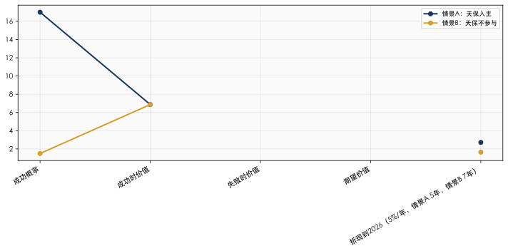
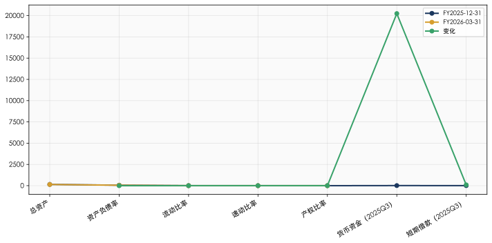

工信部电池产能审批改革（初步信息，待工信部确认）：
根据行业初步信息，工信部正在推进电池产能审批机制的系统性改革，核心变化包括以下四个方面：
（1）审批权限上收到中央 原来省级即可自行备案审批新建电池产能；新规将审批权限上收到中央，实行统筹指标管理，地方不得随意批准新项目。
（2）存量已批项目不受影响 2026年已备案、已开工、已获批的产能照常建设、投产，不受新规限制。真正收紧的窗口从2027年下半年新增产能申请开始落地。
（3）实行「指标制 + 分类管控」 国家按企业规模、技术实力、合规度分配扩产额度：头部大厂优先获得指标；中小厂商、无技术积累、低端产能企业基本不再获批新扩产。
（4）硬性门槛抬高 新建项目强制要求高能量密度、长循环寿命、安全合规、碳足迹达标；低端小电芯、落后工艺产能直接限制准入。
⚠️ 重要提示：上述信息为行业初步判断，尚未经工信部正式确认。星恒后续将赴工信部确认具体政策内容和时间表。当前分析基于「高概率情景——新建10GWh产能无法在天津落地」进行推演。不排除以下替代可能：(a) 政策留有新增审批窗口，满足硬性门槛后可申请；(b) 通过产能置换路径——将已淘汰的落后产能指标置换至天津——实现变相落地。建议在工信部确认后更新本附件中的政策假设。
来源：行业初步信息（[L] ★★★☆☆），待工信部正式确认后升级为 [A] 级别。
| 原方案 | 核心要素 | 去产能后状态 | 关键变化 |
|---|---|---|---|
| 方案1：13.73%+第一大股东+控制董事会→并表 | 收购A组13.73%→成为第一大股东→控制董事会→实现并表 | 不变 | 无产能捆绑，纯股权交易路径 |
| 方案2：13.75% + 10GWh产能 | 少数股权+产能落地JVC | 退化为纯13.75%财务投资 | 失去产能协同三重价值（战略影响力/底线保护/估值溢价支撑） |
| 方案3：仅落地产能（无股权） | 纯产能JVC | 删除 | 新建产能面临审批障碍 |
方案2退化的定量影响（详见02号文档方向一）：
| 维度 | 有产能版本 | 无产能版本 | 恶化幅度 |
|---|---|---|---|
| 战略影响力 | 产能JVC协议提供间接影响力 | 完全无影响力（13.73%少数股东） | 严重 |
| IRR底线保护 | 产能ROE 8.1%独立回报 | 无任何兜底 | 严重 |
| 估值溢价支撑 | 产能协同部分支撑1.0x PS | 无协同支撑 | 显著 |
| 5年纯财务IRR | — | -20.3%（基准情景） | 深度负值 |
核心结论：去产能后，方案2（纯13.75%）的独立投资逻辑薄弱——基准情景下5亿投资预期仅回收1.61亿（MOIC 0.32x）。方案2必须升级为控股路径（方向二≥30%）或上市平台整合（方向三A/三B）才具备经济合理性。
工信部产能审批改革的核心制约在于新建产能的行政审批门槛大幅抬高（审批权限上收+指标制+硬性门槛），而非限制存量产能的利用方式。通过在天津保税区设立运营实体（「天保星恒新能源有限公司」，以下简称「天津平台」），以委托加工模式利用星恒现有产能（滁州/苏州/青川），实现：
天津平台（天保控股51%+星恒49%）
│
├── 委托加工协议 → 星恒滁州基地（现有产能，部分产能专供天津平台）
├── 委托加工协议 → 星恒苏州基地（现有产能）
└── 委托加工协议 → 星恒青川基地（LMFP前驱体）
│
├── 产品：轻型动力电池模组/PACK
├── 客户：北方市场（京津冀两轮车/三轮车锂电）+ 天津保税区出口
└── 产值归属：计入天津保税区工业产值，享受保税区税收优惠
(1) 法律依据
| 法规层次 | 依据 | 适用性 |
|---|---|---|
| 《民法典》合同编第770条（承揽合同） | 委托加工=承揽合同，定作人提供技术要求，承揽人完成工作交付成果 | ✅ 成熟法律框架 |
| 《产品质量法》第26-27条 | 委托方作为品牌方承担产品质量责任 | ⚠️ 天津平台需建立质量管控体系 |
| 《环境保护法》+ GB 31573-2015 | 生产环节环保责任由承揽方（星恒工厂）承担 | ✅ 天津平台自身无生产排放 |
| MIIT电池产能审批新规（初步信息） | 仅约束新建产能的行政审批，不约束委托加工关系——委托加工不涉及新增产能指标申请 | ✅ 关键合规论证点 |
(2) 与产能审批新规的兼容性论证
产能审批新规的核心逻辑是「中央统筹指标+分类管控+硬性门槛」——其针对的是新增产能的行政审批门槛大幅抬高，而非优化存量产能的利用方式。委托加工模式不新建任何产线、不申请新增产能指标、不新增行业总产能，仅改变存量产能的客户结构和产值归属。产能审批新规的字面含义和立法目的均不覆盖委托加工安排。 此外，即使未来星恒自身申请扩产指标，委托加工天津平台的存在反而构成「已有实质性市场需求」的有利论证，有助于在指标分配中占据优势。
(3) 需关注的合规边界
若星恒为满足天津平台订单而扩建滁州/苏州产线→触发产能审批新规（需申请中央指标+满足硬性门槛，难度大幅提高）
若天津平台提供资金/设备给星恒用于扩产→可能被视为变相新增产能，同样触发审批
安全边界：天津平台的年度委托加工量≤星恒现有闲置产能（不触发星恒扩产）
产能置换可能性：若星恒将已淘汰的落后产能指标置换至天津，可在不新增净产能的前提下实现天津本地化生产。该路径的合规性需工信部确认
| 要素 | 设计 | 论证 |
|---|---|---|
| 天津平台股权 | 天保控股51%（并表）+ 星恒49%（权益法核算） | 天保控股并表，营收计入天保合并报表 |
| 委托加工定价 | 成本+5-10%加成（独立交易原则） | 需第三方转让定价报告，避免关联交易合规风险 |
| 产能来源 | 星恒滁州基地当前产能利用率约60-70%（FY2025，[C]行业估计），闲置产能可覆盖天津平台初期需求 | 不触发新建产能审批 |
| 产品方向 | 轻型动力电池（两轮车/三轮车/低速车）+ 便携储能 | 与星恒现有产品线一致 |
| 产值目标 | 第1年5-10亿 → 第3年20-30亿（相当于新增约0.5-1GWh产量，[L]推算） | 值注入天津保税区，支撑天保与地方政府谈判 |
与直接新建10GWh产能相比，委托加工模式的价值不在于规模，而在于：
合规绕过产能审批门槛：零新建产能=无需申请中央产能指标=免于硬性门槛审核
快速启动：6-9个月可完成公司设立+委托加工协议签署+首批订单交付（vs新建产能24-36个月）
轻资产运营：天保不需要投入厂房/设备CapEx，仅需运营资金
产值归属天津：天津平台营收计入保税区工业产值——满足地方政府对「产业引入」的核心KPI
为星恒提供增量订单：缓解星恒产能利用率压力（FY2025约60-70%），增强天保对星恒的谈判地位
| 风险 | 等级 | 缓解措施 |
|---|---|---|
| 天津平台利润率薄（代工费模式，GM估计5-10%） | 🟡 P2 | 规模放量+保税区税收返还可提升ROE |
| 控制力不足导致委托加工虚置（核心风险） | 🔴 P0 | 若天保仅为少数股东（13.73%无控制权），星恒可随时以「产能紧张」「排期冲突」为由压低天津平台订单优先级、提高代工价格、或拒绝分配闲置产能。委托加工协议的法律约束力无法替代实际控制力——详见下方专论 |
| 星恒谈判筹码强（掌握全部产能资源） | 🟡 P1 | 天保通过A组收购获得13.73%股权→成为星恒股东→利益对齐 |
| 产能审批政策未来可能扩展至委托加工 | 🟢 P3 | 当前改革针对新建产能行政审批；跟踪工信部后续政策解读 |
| 委托加工产品质量责任归属 | 🟡 P2 | 天津平台需建立独立质检体系；协议明确责任划分 |
委托加工模式的核心脆弱点不在于法律合规性，而在于实际执行中的控制力缺位：
委托加工协议（法律约束力）
└── 名义上：天津平台下单 → 星恒必须排产 → 交付 → 结算
但实际上：星恒掌握全部产能资源 + 生产调度权 + 成本信息
若无控制权，天保无法——
├── 强制星恒优先排产天津平台订单（vs星恒自有客户）
├── 约束代工定价（星恒可随时以「成本上涨」为由提价）
├── 核查真实产能利用率（星恒可声称「产能已满」拒绝接单）
└── 在星恒管理层变更后维持协议连续性
两种情景下的实效对比：
| 维度 | 情景A：天保有控制权（方案1） | 情景B：天保无控制权（方案2退化版） |
|---|---|---|
| 产能调度 | 董事会决议→优先保障天津平台订单 | 协议请求→星恒管理层自主决定优先级 |
| 代工定价 | 可通过董事会施加成本透明+合理加成 | 星恒单方定价，天津平台被动接受 |
| 产能分配争议 | 董事会层面协商解决 | 法律诉讼（耗时+关系破裂） |
| 管理层变更后 | 控制权不随人员变动而消失 | 协议可能被新管理层重新解释或消极执行 |
| 实效等级 | 高——委托加工=准自有产能 | 低——委托加工=普通客户关系，随时可被降级 |
结论：委托加工模式不是「控制权的替代品」，而是「控制权的放大器」。没有控制权，委托加工协议只是一纸承揽合同——法律上有效、实际上无力。方案1（13.73%+控制董事会→并表）是委托加工天津平台发挥实效的必要前提。
💡 置信度：委托加工的合规性论证基于产能审批改革初步信息和现行法规文本分析（★★★☆☆）。产能审批新规的具体内容和时间表尚待工信部正式确认（★★☆☆☆）。建议在正式推进前：(a) 星恒赴工信部确认审批改革的具体内容；(b) 通过天津保税区管委会与工信部预沟通委托加工模式的合规性；(c) 同步探索产能置换路径作为备选方案。
| 投资人群体 | 持股 | 核心诉求 | 当前状态 | 紧迫度 |
|---|---|---|---|---|
| A组（10家PE） | 13.73% | 立即退出——对赌触发，3-4家已起诉/仲裁 | 天保5亿正在收购谈判中 | 🔴极高 |
| 启源纳川 | 17.73% | 债务危机化解（纳川股份被执行22.33亿） | 对赌回购义务人（已违约），由GP+管理层实质控制 | 🔴极高（法律风险） |
| B组-急迫（盈科系等） | ~12.34% | 想走但可等待——已有2家起诉，耐心消耗中 | 观望天保A组收购进度和IPO前景 | 🟠中高 |
| B组-观望（赛富系/国资系） | ~21.79% | 可接受等待IPO——对赌已触发但选择暂不执行 | 需要明确的IPO时间表和路径 | 🟡中 |
| 战略国资（深创投/安徽高新投） | 15.83% | 战略持有+期待IPO——不急于退出 | 认可星恒产业价值 | 🟢低 |
| 管理层（苏州袍泽） | 6.26% | 保住平台+兑现股权价值——核心是"不下桌" | 对启源纳川有回购连带责任风险 | 🟠中高 |
投资人核心矛盾三角：
天保控股（买方）
/ \
/ \
低价收购 控制权+并表+上市预期
/ \
/ \
A组（想走） 管理层（想留+想兑现）
| |
| 13.73% 5亿(7折) | 6.26% ESOP
| |
└──── 与 ────────────────┘
|
启源纳川 17.73%（核心对赌义务人，已违约）
|
┌───┴───┐
│ │
B组急迫 B组观望
~12.34% ~21.79%
(想走) (等IPO)
天保的最优策略不是「把所有人都送走」（总成本要约50%≈25亿+），而是「让足够多的人愿意留下一起等IPO」——即阶段性收购+留存股东IPO预期的组合策略。
目标：完成A组13.73%收购，建立天保与星恒的利益关系，获取董事会观察员席位。
| 谈判对象 | 策略 | 关键杠杆 | 预期结果 |
|---|---|---|---|
| A组10家 | 7折（12.1元/股），5亿 | 唯一有资金+意愿的接盘方；A组3-4家已进入司法程序 | 成交概率80%+ |
| 管理层（冯笑/苏州袍泽） | 非正式交流IPO路径预期：天保入主后可推动港股独立IPO或上市平台整合，管理层不作为卖方而是「共同创始人」参与未来上市 | 管理层最怕的不是低价而是"出局"——天保明确承诺上市后管理层继续留任+锁定期后二级市场退出 | 建立初步信任 |
| 启源纳川 | 暂时不碰——17.73%结构复杂（纳川股份破产+GP控制+对赌义务） | — | 第一阶段不启动 |
第一阶段核心交付物：
A组收购协议签署
天保与星恒管理层签署《附条件生效的战略合作框架协议》（含IPO推进承诺+管理层留任条款+董事会席位安排）
目标：将持股从13.73%推至≥30%+获取董事会多数席位，满足并表条件。
收购路径：
| 步骤 | 操作 | 持股累计 | 金额估算 | 价格策略 |
|---|---|---|---|---|
| Step 1 | A组10家 | 13.73% | 5亿（7折，12.1元/股） | 已完成 |
| Step 2a | B组急迫（盈科系~12.34%） | ~26.07% | ~4.5亿（6折，~10.3元/股） | B组比A组急迫度低→需更深折扣吸引 |
| Step 2b | B组观望中选择性收购~4% | ≥30.00% | ~1.5亿（6-6.5折） | 选择价格最低/急迫度最高的标的 |
| 合计 | ≥30.00% | 约11亿 |
B组谈判的核心杠杆：
B组「对赌暂缓」状态依赖于「港股IPO预期」——每过一个月IPO无进展，B组急迫度+1
天保是唯一既有资金又愿意接盘非上市非流动股权的买方
「天保入主后推动IPO」vs「启源纳川继续僵持」——前者提供确定性时间表
部分B组（国资背景）可能愿意「阶段性留下等IPO」而非全部退出
第二阶段核心交付物：
持股≥30%
董事会≥5/9席（多数），满足并表条件
与留存B组股东签署《股东协议》（含IPO推进时间表+关键事项否决权安排）
法律依据：
《企业会计准则第33号——合并财务报表》第7条：控制三要素——权力+可变回报+影响回报的能力。持股>30%+董事会多数=控制=[K] ★★★★★
《公司法》第103条：特别决议（修改章程/增减资/合并分立）需>2/3表决权——30%+可获得否决权保护=[K] ★★★★★
目标：满足「实控人变更后经营年限」要求后，启动IPO或上市平台整合。
关键约束——实控人变更后的等待期：
| 上市地 | 规则 | 等待期 | 来源 |
|---|---|---|---|
| A股（主板/创业板） | 最近三年实控人未发生变更（《首次公开发行股票注册管理办法》第12条） | 3个完整会计年度 | [A] CSRC（中国证券监督管理委员会） |
| A股（科创板） | 最近两年实控人未发生变更（科创板上市规则第2.1.4条） | 2个完整会计年度 | [A] CSRC |
| 港股（主板） | Rule 8.05(c): 至少3个财年在大致相同的管理层及拥有权下经营（HKEX GL55-13：实质重于形式原则，联交所对「控制权变更」采实质判断） | 至少3个完整财年（若变更发生于营业记录期内） | [A] HKEX Listing Rules + GL55-13 |
时间线推算：
2026Q3 天保完成A组收购（13.73%）
│
2027H1 天保持股推至30%+（发生控制权变更）
│
├── 港股路径：控制权变更后需3个完整财年
│ └── 2028/2029/2030 → 2031H1可提交A1
│
└── A股科创板路径：控制权变更后需2个完整财年
└── 2028/2029 → 2030H1可提交申请
🟡 上述等待期计算基于规则原文。实际审批中，监管对「实质控制权变更」的判断采用实质重于形式原则——13.73%→30%+的变更在持股比例的跨越上可能被视为「重大变更」，但在管理层连续性和业务连续性上的论证空间取决于：(a) 冯笑/核心管理层是否留任；(b) 星恒主营业务是否连续；(c) 天保是否能证明自己为新进的「财务/战略投资者」而非「改变业务方向的产业整合者」。建议在收购前由保荐人出具正式的Rule 8.05(c)/CSRC注册制合规论证。
置信度：[K] ★★★★☆（规则文本明确，但监管裁量空间存在）
| 维度 | A股（天保基建000965.SZ） | 港股独立IPO | 港股（天保能源01671.HK） |
|---|---|---|---|
| 等待期 | 科创板2年/主板3年（实控人变更后） | 3个完整财年（Rule 8.05c） | RTO=新上市=3个财年 |
| 估值水平 | 电池正极/电芯A股PS 1.0-3.0x（[K]） | 港股电池PS 0.3-0.9x（akshare实时） | 壳市值仅1.36亿HKD |
| 审批障碍 | 🔴 房地产上市公司跨界限制 | 🟡 Rule 8.05c+业绩记录 | 🔴 极端VSA→RTO |
| 审批确定性 | 较低（CSRC窗口指导多变） | 中（联交所规则透明但涉裁量） | 最低（RTO=全新上市审查） |
| 天保基建现有优势 | 市值40.84亿，营收28.04亿（与星恒36.36亿匹配度好） | 无 | — |
| 天保能源现有劣势 | — | — | 市值1.36亿 vs 星恒营收36.36亿（30-50倍差距） |
| 可行性 | ⚠️ 需「园区+新能源」转型论证 | ⚠️ 港股小市值偏见+等待期 | 🔴 实质上不可行 |
置信度：[K] ★★★★☆（A股/港股上市规则为公开法律文本，估值水平基于行业可比公司和akshare实时数据）
CSRC对房地产上市公司再融资和跨行业并购的窗口指导长期趋严。天保基建（000965.SZ）主营房地产开发，收购锂电池公司的「主业协同」逻辑需要特别论证。
潜在突破策略：
| 策略 | 操作 | 成功概率 | 时间 |
|---|---|---|---|
| 「园区+新能源」重新定位主业 | 天保基建依托天津保税区定位，将主营业务描述从「房地产开发」调整为「产业园区开发运营+新能源投资」——此为深圳/苏州/合肥等地国企已有先例的转型路径 | ★★★☆☆（40-50%） | 12-18个月 |
| 现金收购<30%（规避重大资产重组） | 天保基建以自有资金收购星恒<30%股权，因不触发重大资产重组标准（三项指标均<50%，详见02文档3.2节），无需CSRC并购重组委审核——仅需深交所信息披露+董事会决议 | ★★★★☆（60-70%） | 3-6个月 |
| 天保基建先建立新能源业务板块 | 通过委托加工设立的天津平台（或收购其他小型新能源资产），先在天保基建体内形成新能源收入（如5-10亿），再收购星恒——此时「同业整合」逻辑清晰 | ★★★☆☆（40-50%） | 18-24个月 |
| 分立/剥离地产→转型纯新能源 | 天保基建将地产业务剥离至兄弟公司，再装入星恒——类似中交地产2025年重组方案，但周期长、涉多部门协调 | ★★☆☆☆（20-30%） | 24-36个月 |
💡 关键判断：对于天保基建A股路径，最值得推进的策略是「以现金收购<30%星恒股权（规避重大资产重组审查）+ 同时启动天保基建的『产业园区+新能源』主业重新定位」。两个操作互为支撑：收购星恒为转型提供「实锤动作」，转型叙事为收购提供「主业协同」的理由。
参考案例（[K] ★★★☆☆）：以下A股房地产上市公司通过「产业园+新能源」叙事实现业务结构调整——张江高科（600895）转型科创投资+园区运营、苏州高新（600736）转型新能源+环保、合肥城建（002208）转型产城融合。路径存在但需逐案论证。
| 上市平台 | 星恒合理PS范围 | 2030E估值（假设140亿营收×6.7%NPM=9.4亿净利） | 天保13.73%→30%+的回报 |
|---|---|---|---|
| 港股独立IPO | 0.3-0.7x PS / 8-15x PE | 约23-45亿（PS 0.3-0.5x）× 中位34亿 | IRR约0-8%（视入股价格） |
| A股（装入天保基建） | 0.7-1.5x PS / 20-35x PE | 约70-140亿 → 中位105亿 | IRR约15-30% |
| A股（独立IPO） | 1.0-2.5x PS / 25-50x PE | 约140-250亿 | IRR约25-45% |
⚠️ A股估值溢价是理论值——实现的前提是突破房地产转型障碍且星恒业绩达到管理层预测。港股IPO是「可实现的低回报」vs A股是「不可靠的高回报」。估值数据为基于行业可比公司（[K] ★★★☆☆）的估计区间，非基于具体交易乘数的精确估值。
首选：港股独立IPO——作为「保底退出路径」
理由（按优先级）：
审批确定性相对较高（联交所规则比CSRC窗口指导更透明可测）
不涉及房地产上市公司跨界问题
星恒（两轮车锂电龙头+港股稀缺标的）在香港市场有一定吸引力
港股上市后可作为跳板——未来A+H或A股回归的通道
Rule 8.05(c)等待期（3个财年）在商业上可接受——2027控制权变更→2030可申报
备选：装入天保基建A股——作为「高回报期权」
启动条件：
天保基建「园区+新能源」转型战略获深交所/CSRC认可（通过Pre-Communication获得非正式反馈）
或采用「现金收购<30%」策略规避重大重组审查
或天保基建已完成地产剥离/主业重新定位
核心思路：不收购星恒股权（避开50家股东的复杂谈判+对赌困局），直接收购星恒旗下最有价值的资产——星恒青源（固相法LMFP前驱体子公司）。
现在：
天保 → 星恒电源（50家股东，对赌困局，微利）→ 星恒青源（LMFP前驱体，GM 15.4%，净利率6.9%）
青源收购路径：
天保 → 星恒青源（收购51%+控股权）
│
├── 获得固相法LMFP技术+产能（名义2.0万吨/年）
├── 获得斯科兰德/容百供应商关系
├── 获得巴斯夫杉杉/珠海冠宇/新能安在途客户关系
└── 与天保新能源战略对接（天津平台委托加工）
| 指标 | FY2025 | 判断 |
|---|---|---|
| 营收 | 7,116万（按管理层材料，主报告取0.70亿） | 体量极小（占合并1.9%） |
| 净利 | 492万 | 净利率6.9%——中试阶段已盈利 |
| GM | 15.4% | 正常偏上（vs容百前驱体GM -10.93%） |
| 名义产能 | 2.0万吨/年 | 产能利用率仅15-25%（实际~0.3-0.5万吨/年） |
| 技术 | 固相法LMFP前驱体——唯一经客户（斯科兰德/容百）认证的固相法LMFP路线 | 差异化程度高 |
| 客户 | 斯科兰德（容百）+ 珠海冠宇/新能安送样 + 钠创百吨意向 | 客户集中但正在拓展 |
| 优势 | 说明 |
|---|---|
| 谈判对象少 | 青源只有星恒一个法人股东（非50家股东），一次交易即可完成 |
| 避开对赌困局 | 青源自身无对赌条款——不涉及35家PE的回购义务 |
| 估值锚定更容易 | 青源GM 15.4%是独立可核实的财务指标，可比交易：前驱体企业并购PS通常在1-3x（[K] ★★★☆☆，行业估计） |
| 资产干净 | 青源无质押/抵押（vs 星恒滁州核心资产已质押约16.3亿，详见附件F5） |
| 获得核心技术 | 固相法LMFP是星恒最具差异化价值的技术资产（详见附件C） |
| 可逆性 | 若后续星恒整体IPO成功，天保可将青源回售给星恒或置换为星恒股权 |
| 局限 | 说明 |
|---|---|
| 体量极小 | 7,116万营收（占合并1.9%）——收购青源 ≠ 获得星恒的整体业务 |
| 供应链「夹层困境」——上下游均受制于星恒系 | 🔴 核心风险——详见5.6节专论 |
| 失去星恒下游 | 青源的最核心客户是斯科兰德/容百——若青源控股权变更触发斯科兰德重新认证，短期收入可能中断 |
| 两轮车市场入口丢失 | 星恒的两轮车72.5%市占率是青源不具备的 |
| 技术孤岛风险 | 固相法磷酸锰铁锂前驱体脱离星恒锰酸锂电芯制造经验→两者原本的「锰酸锂→磷酸锰铁锂同系迁移」协同断裂 |
| 关联交易复杂化 | 天保持有青源控股权后，青源对星恒的销售变为关联交易 |
为弥补上述局限：
策略A：「青源+星恒少数股权」组合
同时收购青源51%控股权 + 星恒A组13.73%
成本：青源（估计0.5-1.5亿，[L]基于GM 15.4%+营收7,116万+净利492万估算）+星恒A组5亿 = 约5.5-6.5亿
效果：获得核心技术（青源）+ 获得两轮车市场入口（星恒13.73%）+ 保留星恒IPO上行期权
策略B：「青源先收 + 星恒期权」
先收购青源控股权 → 以青源为技术平台发展LMFP前驱体业务
同时与星恒签署「优先认股权协议」→ 天保有权在星恒IPO前以约定价格增持星恒股权至30%+
效果：分步操作、风险可控、保留核心选择权
💡 青源估值参考：青源FY2025净利492万、净利率6.9%。可比前驱体交易PS约1-3x（[K] ★★★☆☆，基于行业经验而非具体交易数据）→ 青源估值约7,116万×1.5-3x ≈ 1.1-2.1亿。收购51%控股权需约0.55-1.1亿（不含控股权溢价，通常10-30%）→ 总价约0.6-1.4亿。此估值为初步估算，正式收购前需独立资产评估。
独立收购青源（不控制星恒）面临的核心问题是：青源处于星恒产业链的中间环节，上下游均直接或间接受星恒影响——天保收购后成为资产所有者，但资产的生存和发展取决于一个不受天保控制的第三方（星恒）。
═══════════════════════════════════════════════════════════════
青源在LMFP产业链中的位置
═══════════════════════════════════════════════════════════════
上游（原材料） 中游（前驱体） 下游（正极加工→电芯）
─────────────────────────────────────────────────────────────────
锰矿（桂平/进口）
│ ┌─ 巴斯夫杉杉（142.5万应收）
化学品（南海化工等） │ ↓
│ │ ┌──────────────────────────┐
└──────→ 青源 ────────→│───→│ 斯科兰德/容百 │
│ │ │ ← 向星恒销售正极 9,775万 │
│ │ │ ← 从青源采购前驱体 229万 │
│ │ └──────────┬───────────────┘
│ └─ 四川富骅（135万应收） │
│ ↓
└──→ 固相法LMFP前驱体 星恒电源
（核心技术/唯一差异化） （滁州星恒）
← 斯科兰德正极材料
9,775万采购
═══════════════════════════════════════════════════════════════
天保收购青源后的「夹层」位置
═══════════════════════════════════════════════════════════════
天保控股
↓ 51%+
青源 ──→ 需要上游锰源/化学品（无自主保障）
│
└──→ 需要下游客户（三家客户均与星恒系存在商业关系）
│
├── 斯科兰德：最大品牌客户，但同时是星恒的正极供应商
│ （星恒采购9,775万 >> 青源销售229万）→ 星恒对斯科兰德
│ 的商业影响力远超青源
│
├── 巴斯夫杉杉：全球正极材料龙头，采购量极小（142.5万）
│ 规模不对等——青源对巴斯夫杉杉无议价能力
│
└── 四川富骅：应收账款135万，微型客户
传导演示（以斯科兰德路径为例）：
触发事件：星恒管理层决策（不受天保控制）
│
├── 情景A：星恒要求斯科兰德优先供应/降价
│ └── 斯科兰德为保住9,775万大订单 → 压缩成本
│ └── 减少从青源采购（228.9万微不足道）或要求青源降价
│ └── 青源失去主要品牌客户 / 利润率被压缩
│
├── 情景B：星恒转向其他正极供应商（如德方纳米、自建）
│ └── 斯科兰德失去9,775万订单 → 自身生存压力
│ └── 斯科兰德收缩采购 → 青源订单归零
│ └── 青源仅剩巴斯夫杉杉（142.5万）+四川富骅（135万）
│ 合计不足300万应收 → 青源实质上停产
│
└── 情景C：容百/斯科兰德自建固相法前驱体产能
└── 容百前驱体GM -10.93%（亏损），有动机优化成本
└── 自建固相法产线（18-24个月）→ 不再从青源采购
└── 青源失去最大客户+面临新增竞争对手
🔴 核心矛盾：斯科兰德从青源的采购额（228.9万）仅为其对星恒销售额（9,775万）的2.3%。在星恒-斯科兰德-青源这个三角关系中，青源是商业上最可被牺牲的一环——斯科兰德宁可失去青源的供应，也不会冒失去星恒大订单的风险。
| 上游要素 | 当前状态 | 受制维度 |
|---|---|---|
| 锰矿资源 | 依赖外部采购。桂平锰矿基地仅为规划（置信度★★☆☆☆） | 价格波动风险；无锁价锁量长协 |
| 化学品（四锰等） | 南海化工战略合作——管理层自述，未经独立核实 | 单一供应商依赖风险；合作条款不明 |
| 园区协同（液氨/硫酸/蒸汽） | 心连心化肥园区规划中（远期），预计降本15-20% | 完全依赖园区基建进度，青源/天保无控制力 |
| 运营资金 | FY2025末零信贷记录，完全依赖星恒体系内资金调拨 | 脱离星恒后，天保需独立提供营运资金——若下游客户受星恒影响而流失，营运资金投入可能成为沉没成本 |
| 受制维度 | 受制对象 | 受制机制 | 严重程度 | 天保可控性 |
|---|---|---|---|---|
| 下游客户 | 斯科兰德（间接→星恒） | 星恒以9,775万大订单影响斯科兰德的采购决策 | 🔴 极高 | 无——星恒管理层不受天保控制 |
| 下游客户 | 巴斯夫杉杉/四川富骅 | 规模不对等，青源无议价能力；且两者合计应收账款不足300万 | 🟡 中高 | 有限——可通过商务拓展增加新客户，但窗口期仅3年 |
| 上游原材料 | 锰矿/化学品供应商 | 无锁价锁量长协，桂平/南海化工/心连心均未落地 | 🟡 中 | 部分——可通过市场采购+长协锁定，但增加成本 |
| 运营资金 | 星恒（原母公司） | 脱离星恒后天保需独立输血；若营收因客户流失下降，持续投入可能变为沉没成本 | 🔴 高 | 高——天保可以注资，但「注资维持一个无客户的工厂」无商业意义 |
| 技术替代 | 容百/斯科兰德 | 可能自建固相法前驱体产线（18-24个月）→ 从客户变为竞争对手 | 🟡 中高 | 无——技术路线选择由容百管理层决定 |
独立收购青源（不控制星恒）仅在以下四个条件同时满足时才具备经济合理性：
| 条件 | 要求 | 当前满足度 |
|---|---|---|
| 条件1：客户独立性 | 青源的客户不依赖星恒的商业决策（即斯科兰德/巴斯夫杉杉/富骅的采购决策独立于星恒） | ❌ 不满足——斯科兰德对星恒销售9,775万 vs 从青源采购229万，商业上受星恒影响 |
| 条件2：上游自主性 | 原材料供应有锁价锁量长协保障，不依赖规划中的项目 | ⚠️ 部分满足——可通过市场化采购解决，但增加成本 |
| 条件3：技术独占性 | 固相法认证壁垒足够高，容百/斯科兰德短期内无法自建替代产能 | ⚠️ 暂时满足——认证周期6-12个月，但容百可能在2026-2027年自建 |
| 条件4：规模经济 | 青源独立运营后可拓展足够多的外部客户（珠海冠宇/新能安等送样转量产），使单一客户依赖度降至50%以下 | ❌ 不满足——送样客户均未形成实质营收，客户拓展至少需12-18个月 |
综合判断：四个条件中两个不满足、两个仅部分满足。独立收购青源的策略在当前时点不具备独立的经济合理性。 天保若要收购青源，必须同步推进星恒控制权（方案1的13.73%+董事会控制→并表），使青源的上下游关系从「受制于人」转变为「同一控制下的产业协同」。唯有如此，青源的固相法技术价值才能被安全地释放，而非成为天保手中的「技术孤岛」。
💡 置信度：[K] ★★★★☆。产业链上下游依赖分析基于附件A（体外循环双向交易）和附件B（固相法客户结构）的DD核实数据。斯科兰德-星恒-青源三角关系的商业逻辑推演基于公开的采购/销售金额比例（9,775万 vs 228.9万 = 43:1，[B] ★★★★★）。客户拓展时间估计（12-18个月送样转量产）基于锂电前驱体行业惯例（[K] ★★★☆☆）。
| 管理层要素 | 现状 | 诉求 |
|---|---|---|
| 持股平台 | 苏州袍泽（6.26%，冯笑为GP） | 不被稀释、不被迫出售 |
| 回购连带风险 | 启源纳川对赌违约→冯笑/管理层可能承担回购连带责任（取决于具体协议条款） | 解套——天保入主替管理层解决对赌困局 |
| 经营控制 | 管理层实质控制公司日常经营 | 保持经营自主权 |
| 长期诉求 | 兑现6.26%股权价值（当前非流动） | 上市→二级市场退出 |
核心谈判定位：天保不是来「夺权」的，而是来「解套」的——天保接盘启源纳川/PE的对赌义务，管理层以表决权和价格让步作为对价。
天保（13.73%+后续增持至30%+）
+ 管理层（苏州袍泽6.26%）
└── 管理层将6.26%的表决权委托天保行使（委托期限：至IPO完成）
OR
└── 签署《附上市生效条件的一致行动协议》
（天保+管理层在上市后形成一致行动人，成为第一大表决权组合）
对管理层的好处：
天保（国资）背书增强上市信用
管理层保留股权（6.26%），享受IPO溢价
上市后锁定期满（通常1年）通过二级市场退出
对天保的好处：
30%+6.26% = 36.26%表决权 → 更接近特别决议否决权（>33.3%）
并表论证中增加「与管理层一致行动」=更强控制力证据
避免管理层成为「内部反对派」
核心条款：
管理层6.26%股权锁定至IPO完成后1年（不得转让）
业绩里程碑：FY2027-2029年营收CAGR ≥ 20% / 净利率 ≥ 3% → 管理层额外获得股权激励（从天保所持股份中划拨1-2%）
若IPO在5年内未实现 → 天保有权以约定价格（如最新一轮融资价格的80%）收购管理层所持股份的50%
法律依据：[K] ★★★★★——《民法典》第158条（附条件法律行为）+《公司法》关于股东间协议自由的原则。业绩对赌条款在PE投资实践中广泛使用，法律基础成熟。
持有星恒17.73%（最大单一股东）
纳川股份（LP）被执行22.33亿、20条股权冻结+轮候冻结+失信
对赌回购义务人（全体35家PE的回购义务）
GP+管理层（冯笑）控制投决会（3/5票）
关键约束：《合伙企业法》第67条——有限合伙人不执行合伙事务。即使天保取得纳川股份的LP份额，也无法控制启源纳川的星恒股权。
启源纳川的LP份额当前处于「极度折价」状态——纳川股份濒临破产，其持有的LP份额在清算中将大幅折价处置。
天保的成本优化路径：
路径：天保 → 收购纳川股份持有的启源纳川LP份额（而非直接收购星恒股权）
│
├── LP份额市场价格：约1-2折（纳川股份破产清算折价）
│ └── 原因：LP无权参与合伙企业事务执行+纳川股份被执行22.33亿
│
├── 天保取得的经济利益：
│ └── 启源纳川持有星恒17.73% → 按天保PS 1.0x（36.4亿估值）价值约6.46亿
│ └── 但LP份额购买价格仅为0.6-1.3亿（1-2折）
│
└── **综合成本效果**：
├── A组13.73%花费5亿（12.1元/股，7折）
├── 若同时以1-2折获取LP份额 → 实际获得17.73%的经济利益但不获得投票权
└── 综合成本：(5亿 + ~1亿) / (13.73% + 17.73%×LP折算系数)
🟡 核心限制：LP份额 ≠ 星恒股权。天保获得LP份额后仍有以下障碍：
LP份额的价值释放策略：(a) 与GP/冯笑协商——天保以LP身份提出「将LP份额转换为直接持有星恒股权」的合伙决议；(b) 启源纳川逐步减持星恒股权→收益分配→天保（LP）获得现金回笼；(c) 启源纳川解散清算→星恒股权作为剩余财产分配给LP（天保直接获得星恒股权）。
置信度：[K] ★★★★☆——基于《合伙企业法》的LP权利限制规则是明确的。转换策略的可行性取决于启源纳川合伙协议的约定和GP/冯笑的配合意愿。
用户明确要求「最好不要搭售员工持股平台（苏州袍泽）」。理由：
绑定管理层利益：ESOP是管理层长期激励工具，搭售意味着管理层被迫退出→核心人才流失风险
IPO必要条件：上市前管理层连续性和稳定性是监管关注重点——ESOP大幅减持将触发HKEX Rule 8.05(c)/CSRC对「管理层重大变更」的审查
替代方案：用启源纳川LP份额的低价收购来实现成本优化（如6.3.2节所述），而非通过ESOP搭售
| 优先级 | 路径 | 操作内容 | 窗口期 | 关键风险 |
|---|---|---|---|---|
| P0 立即启动 | 方向一：A组13.73%收购 | 5亿收购（7折），价格谈判+尽调+内部决策 | 2026Q3-2026Q4 | A组部分股东反悔或仲裁/判决干预 |
| P1 同步推进 | 委托加工天津平台 | 设立天津平台+签委托加工协议 | 2026Q4-2027H1 | 产能审批政策边界需工信部预沟通 |
| P1 同步推进 | 管理层谈判（表决权委托） | 与冯笑非正式交流→框架协议 | 2026Q4-2027H1 | 管理层信任建立速度 |
| P2 适时启动 | 方向二：B组收购推至30%+ | 选择性收购B组急迫标的 | 2027H1-2027H2 | 资金筹集+国资委审批 |
| P2 适时启动 | 青源收购（需以路径1成功为前提） | 青源估值+控制权收购谈判 | 2027H1-2027H2 | 斯科兰德客户关系稳定性+夹层困境（详见5.6节） |
| P3 长线布局 | 上市路径实施 | IPO准备+保荐人+等待期满足 | 2028-2031 | 实控人变更后等待期计算起点 |
| P3 长线布局 | 启源纳川LP份额收购 | 纳川股份LP份额低价接盘 | 2027-2029 | 须与GP/冯笑协商转换机制 |
| 天保持有的杠杆 | 对谁有效 | 杠杆强度 | 使用时机 |
|---|---|---|---|
| 「唯一有资金+意愿的接盘方」 | A组/B组急迫 | ★★★★★ | 价格谈判 |
| 「IPO是唯一退出路径——天保是唯一能推动IPO的新股东」 | B组观望/战略国资 | ★★★★☆ | 说服B组暂不退出 |
| 「替管理层解套对赌连带责任」 | 管理层（冯笑/袍泽） | ★★★★★ | 换取表决权委托+业绩对赌 |
| 「天津保税区产业政策支持（税收返还/土地/园区配套）」 | 星恒（合作方） | ★★★☆☆ | 委托加工天津平台谈判 |
| 「天保基建/天保能源上市平台」 | 所有需要退出路径的投资人 | ★★★★☆ | 提供IPO替代方案 |
| 「纳川股份破产清算——LP份额极度折价」 | 启源纳川LP | ★★★☆☆ | LP份额低价接盘 |
谈判顺序原则：
先锁定A组（已进入司法程序，急迫度最高，先成交建立信用）
再绑定管理层（获取表决权和IPO推进承诺——这是后续所有谈判的基础）
然后议价B组（有了管理层支持+天保IPO承诺，B组谈判筹码大幅增强）
同步推进委托加工（不依赖股权谈判结果，可独立操作）
启源纳川放在最后（结构最复杂，但价格最低——作为最后的价值增厚手段）
不可让步的底线条款：
天保在星恒董事会至少5/9席（多数），包含财务/战略委员会控制权
管理层表决权委托或一致行动安排
对关键事项（增资/合并/分立/重大资产处置/IPO方案）的否决权
优先认购权（未来增资时维持持股比例的优先权）
跟随出售权（Tag-Along，关键股东出售时天保可同步出售）
| 节点 | 适用法规 | 核心约束 | 对操作的影响 |
|---|---|---|---|
| 天保收购星恒>30% | 《企业国有资产交易监督管理办法》（国资委财政部令第32号） | SOE收购非上市企业股权→进场交易评估+国资委审批 | 交易时间线需预留审批周期 |
| 天保持股>30%+并表 | 《企业会计准则第33号》 | 需满足「控制」三要素 | 需获得董事会多数+关键否决权 |
| 实控人变更后A股IPO | 《首次公开发行股票注册管理办法》第12条 | 实控人变更后需2-3年完整会计年度 | 时间线起点=2027H1（完成30%+收购） |
| 实控人变更后港股IPO | HKEX Rule 8.05(c) + GL55-13 | 3个财年在大致相同管理层及拥有权 | 联交所可能从收购日计算3年 |
| 天保基建装入星恒 | 《上市公司重大资产重组管理办法》第12-13条 | 房地产再融资限制+重大重组审查 | 需规避或突破房地产跨界壁垒 |
| 天保能源装入星恒 | HKEX Rule 14.06B（RTO） | RTO=新上市申请 | 极大概率触发RTO，实质上不为捷径 |
| 委托加工 | 《民法典》第770条（承揽合同）+ 工信部产能审批新规（初步信息） | 承揽合同不涉及新增产能指标申请，不受审批新规约束 | 审批政策边界需工信部预沟通；同步探索产能置换路径 |
| 启源纳川LP份额 | 《合伙企业法》第67-68条 | LP无权执行合伙事务 | 收购LP≠获取星恒股权控制 |
站在投资人角度，天保以30%折价（7折，12.1元/股）收购老股，相比「等待港股上市后在二级市场退出」，投资人为什么要同意？
要回答这个问题，不能站在天保的立场推演，必须进入PE投资人的决策逻辑——基金生命周期、LP压力、法律障碍清除成本、IPO时间线与成功概率、现有僵局的真实成本，这五个维度共同决定了「等待IPO」不是一个免费的午餐。
A组10家投资人特征分析：
| 投资人类型 | 典型代表 | 基金设立年份（估计） | 当前基金周期 | LP压力 | 决策偏好 |
|---|---|---|---|---|---|
| 券商系直投（海通系3家） | 辽宁海通/海通创新/湖州赟通 | ~2018-2019 | 第7-8年（典型7+2基金） | 🔴极高（已进入清算期） | 必须退出——已仲裁/诉讼 |
| 银行理财子（兴业系2家） | 江苏疌泉/兴睿永瀛 | ~2019（资管新规后理财子设立） | 第7年 | 🔴极高（资管新规合规压力+理财产品期限约束） | 必须退出——银行理财子不能长期持有非上市股权 |
| 国资产业基金（浙江国资2家） | 嘉兴沨石/沨行景纬 | ~2018-2019 | 第7-8年 | 🟠中高（国资考核+审计） | 倾向退出，但可等待 |
| 区域国资券商直投（粤开系2家） | 惠州联讯/合肥粤开 | ~2019 | 第7年 | 🟠中高 | 倾向退出 |
| 产业投资平台（中兵慧明） | 中兵慧明 | ~2018 | 第8年 | 🔴极高（已二审中） | 必须退出——已诉讼至二审 |
关键发现：A组10家中至少6-7家已进入基金清算期或面临刚性退出压力（海通系3+兴业系2+中兵慧明1=6家，占A组持股比例约10.89%/13.73%中的绝大部分）。对于这些投资人，「再等5-7年等IPO」不是一个选项——他们的LP正在要求赎回资金。
PE基金生命周期知识（[K] ★★★★☆）：中国PE基金典型结构为「5+2」或「7+2」年（投资期5-7年+退出期2年+N个1年延长期）。2019年投资的基金在2026年处于第7-8年——即使GP行使全部延长期权利，最晚也需在2028-2029年前完成全部项目退出和基金清算。每延迟一年，GP面临LP的诉讼风险和GP声誉损失。来源：[K] 基于中国证券投资基金业协会(AMAC)私募基金合同指引和行业惯例。
港股IPO不是「天保买了A组→必然发生」，而是需要一串多米诺骨牌全部倒下：
前提条件 1：启源纳川（17.73%）的对赌义务必须清理
└── 怎么清理？纳川股份（LP）被执行22.33亿，无力履行
└── 谁来解决？目前只有天保提出了可行方案（LP份额接盘+与GP协商）
若天保不参与 → 启源纳川僵局持续 → 至少再拖1-2年
前提条件 2：35家PE（47.87%）的全部对赌条款必须解除
└── 怎么解除？每个PE须单独签署对赌解除协议（或通过股东会决议）
└── 35家PE的诉求分化（A组想走/B组观望/另有部分想IPO）→ 协调成本极高
前提条件 3：实控人状态明确（当前无实控人，50家股东）
└── HKEX Rule 8.05(c)：3个财年在大致相同管理层及拥有权下
如果天保入主（从0→13.73%→30%+），触发「拥有权变更→重新计算3年」
前提条件 4：星恒满足上市财务标准（盈利测试/市值收益测试）
└── FY2025归母净利仅3,986万（审计口径），微利状态，接近盈利测试门槛
行业价格战+储能亏损可能在未来2-3年恶化利润→达不到上市标准
前提条件 5：港股市场对小市值锂电公司的接受度
└── 力劲科技 PE 10.3x / 天能动力 PE 4.3x（akshare 2026-05-27）
港股对小型制造企业给予显著估值折价
| 步骤 | 情景A：天保入主 | 情景B：天保不参与 |
|---|---|---|
| 启源纳川对赌清理 | 2026Q3-2027H1（天保推动） | 2028+或永远（纳川股份自行破产清算+无人接盘） |
| 35家PE对赌解除 | 2027H1-2027H2（天保作为新股东协调） | 2028-2030（无协调方，各自谈判） |
| 管理层及拥有权稳定期间 | 2027H1→3个完整财年→2030（若港股路径） | ?（起始年未定） |
| 保荐人+A1提交 | 2030H2 | ? |
| 上市完成 | 2031H1（最早） | 2032+或永不 |
情景B的IPO期望时间：从2026年起至少7-10年，且成功概率不超过30%（启源纳川自身无法清理→IPO根本上被阻断）。
| IPO前提条件 | 情景A：天保入主 | 情景B：天保不参与 |
|---|---|---|
| 启源纳川清理 | 80%（天保推动+资金到位） | 20%（等待纳川破产自行解决） |
| 35家PE对赌解除 | 70%（天保协调+管理层配合） | 30%（各自谈判，协调成本极高） |
| 3年财务达标（盈利≥5,000万HKD） | 60%（取决于行业景气度） | 50%（行业因素，但公司可能因无外力推动而恶化） |
| 港股市场窗口 | 50%（3-5年后的市场不可预测） | 50%（同左） |
| 联合概率 | 80%×70%×60%×50% = 16.8% | 20%×30%×50%×50% = 1.5% |
🟡 上述概率为基于当前已知信息的逻辑估计（[L] ★★★☆☆），非统计模型输出。核心变量是启源纳川清理——这是IPO的「一票否决」前置条件。只要启源纳川不解决，IPO永远不可能启动。天保是截至目前唯一提出明确解决方案的当事方。
假设（有利于投资人的乐观假设）：
若IPO成功：A组13.73%对应的市值 = 星恒估值×13.73%
港股IPO估值：PS 0.5x × FY2030E营收（假设100亿）= 50亿估值 → 13.73% = 6.87亿
若IPO失败：只能以协议转让退出，折价约40-50% → 13.73%价值约2.5-3亿（基于PS 0.25-0.3x）
| 情景 | 情景A：天保入主 | 情景B：天保不参与 |
|---|---|---|
| 成功概率 | ~17% | ~1.5% |
| 成功时价值 | 6.87亿（2031年） | 6.87亿（2032+年） |
| 失败时价值 | 2.5-3.0亿 | 2.0-2.5亿（公司可能更恶化） |
| 期望价值 | 6.87×17% + 2.75×83% = 3.47亿（未折现到2026） | 6.87×1.5% + 2.25×98.5% = 2.32亿 |
| 折现到2026（5%/年，情景A 5年，情景B 7年） | 2.72亿 | 1.65亿 |

关键发现：即使在有利于投资人的假设下（IPO成功时6.87亿），「等待IPO」的期望价值（天保入主情景约2.72亿）仍低于天保现金收购价5亿。而如果天保不参与，期望价值仅1.65亿——天保的收购价是该值的3倍以上。
PE投资人的决策不是「最大化期望值」，而是「在基金到期前完成退出」。对于A组已经进入诉讼/仲裁的6-7家投资人：
确定性（100%概率）× 5亿 > 不确定性（17%概率）× 6.87亿
现金今天 > 现金7年后——哪怕名义金额更高
LP不会接受「我们的钱还要再等7年，而且只有17%概率能增值」的解释
💡 「确定性溢价」的商业逻辑（[K] ★★★★☆）：这是金融学的基本原则——当退出时间超出基金剩余存续期时，GP必须接受折价以获取确定性。2019年基金到2026年已处于清算期——GP的 fidiciary duty 是「尽快以合理价格变现归还LP」，而非「冒着违反基金合同的风险博取更高回报」。继续等待IPO在商业上可能意味着：(a) GP被LP起诉违反信义义务；(b) GP声誉受损，下一只基金无法募集；(c) 投资经理个人职业生涯受损。
用户提问：「人家不排除有其他的投资人啊。虽然目前其他的投资人都说有，但是也没有实质性的动作」
这反问触及了谈判中最核心的问题——天保「我们走了」的威胁到底有多可信？反过来，投资人「别人会来接盘」的反威胁又有多可信？
| 障碍 | 分析 |
|---|---|
| 复杂的股东结构 | 50家股东、无实控人、35家PE对赌全部触发——这不是单纯的股权投资，而是要同时处理「股权投资+不良资产处置+诉讼和解+对赌重组」的复合交易 |
| 微薄的利润 | 净利率1.24%（FY2025）——对于以IRR为核心KPI的纯财务投资人，这项资产无法通过投委会 |
| 产业资本的三重障碍 | CATL/BYD/EVE等潜在产业买方——(a) 星恒产品与其现有产线竞争（收购后需整合或关闭，产生减值）；(b) 50家股东的谈判协调成本太高；(c) 星恒的技术（固相法LMFP+两轮车LMO）与其现有路线的协同效应有限 |
| 不良资产投资人 | 理论可行，但：(a) 不良资产基金规模通常不足以消化5亿+的股权交易；(b) 不良资产的典型折价率（2-3折）远低于A组可接受水平；(c) 不良资产投资人不会接非上市公司的少数股权——缺乏退出路径 |
| 国有资本（非天保） | 其他地方的国资——需要被投企业在当地落地产能/税收，而星恒现有产能（滁州/苏州/四川）不在其辖区内 |
结论：过去2年的「市场检验」已经证明——在这个时间点、这个价格、这个交易结构下，天保是唯一的潜在买方。这不是天保的说辞，而是市场的实际投票结果。置信度：[L] ★★★★☆（基于公开可得信息和交易结构分析）
| 威胁场景 | 可信度 | 分析 |
|---|---|---|
| 「宁德/比亚迪会来接盘」 | ★☆☆☆☆ | 产业买方有更高效的替代方案（自建产线或收购规模更大的标的），且面临反垄断审查 |
| 「其他国资会出更高价」 | ★★☆☆☆ | 可能，但其他国资同样需要落地产能/税收条件——当前MIIT政策下新建产能受限，交易吸引力下降 |
| 「有PE基金愿意等IPO」 | ★★☆☆☆ | PE基金在清算期不能投新项目——这是一个合规约束，不是商业谈判策略 |
| 「管理层/冯笑会自行筹资收购」 | ★☆☆☆☆ | 冯笑自身面临对赌回购的连带责任风险，不具备筹资能力 |
| 「A组通过诉讼拿到赔偿后自行退出」 | ★★★☆☆ | 这是唯一不太依赖外部买方的路径——但诉讼周期（2-3年）+执行难度（启源纳川/纳川股份无财产）→实际回收率可能仅1-2折 |
用户判断：「我们如果是没有并表，我们就13.73也不参与了。这确实是一种要挟的手段」
这个判断是准确的。「天保不参与」确实是要挟——但不是虚张声势，而是有数据做后盾的要挟：
| 「天保不参与」的后果 | 对A组的影响 | 量化 |
|---|---|---|
| 启源纳川僵局无人解决 | A组无法自行推动IPO——即使诉讼胜诉，执行不到财产 | IPO概率从~17%降至~1.5% |
| 管理层无人兜底对赌 | 管理层失去解套希望→可能离职→公司经营恶化→A组股权价值进一步缩水 | 股权价值可能再折价30-50% |
| 无其他买方出现 | A组继续支付法律费用+2-3年诉讼周期+胜诉后执行困难 | 实际回收可能仅1-2折（1-1.4亿 vs 原始投入6.84亿） |
| 港股IPO永久搁置 | 无实控人+无推动方→上市希望归零 | A组股权→永久性非流动资产 |
天保walk away的威胁之所以有力量，不是因为天保有多强大，而是因为星恒的现状太脆弱。 这个威胁的实际可信度取决于：
投资人是否认识到「天保是唯一可行的解套方案」——需要天保在谈判中不断强化这一认知
投资人是否有可行的替代方案——目前来看，替代方案在法律和商业上都远不如天保的现金收购
用户设计：「管理层让渡员工持股平台（苏州袍泽，6.26%）的投票权，与我们绑定在一起。这样的话就会降低我们收购的成本，达到控股的标准会进一步降低。」
优化前（无管理层表决权绑定）：
天保 13.73% → 需从B组收购 ≥16.27% → 30.00% 控制权门槛
B组收购成本：约16.27% × 6折（10.3元/股）≈ 5.87亿
总成本：5亿（A组）+ 5.87亿（B组）= 10.87亿
优化后（管理层表决权委托/一致行动）：
天保 13.73% + 苏州袍泽 6.26%（表决权委托） = 19.99% 合并表决权
→ 需从B组收购 ≥10.01% → 30.00%
B组收购成本：约10.01% × 6折（10.3元/股）≈ 3.61亿
总成本：5亿（A组）+ 3.61亿（B组）= 8.61亿
节省：2.26亿（-21%）
若进一步获取特别决议否决权（>33.3%）：
天保 13.73% + 苏州袍泽 6.26% = 19.99%
→ 需从B组收购 ≥13.31% → 33.30%
B组收购成本：约13.31% × 6折 ≈ 4.80亿
总成本：5亿（A组）+ 4.80亿（B组）= 9.80亿
管理层（冯笑/苏州袍泽）的核心利益：
对赌连带责任的解套——天保入主后推动启源纳川清理→管理层的回购连带风险解除。这是管理层最大的利益点，没有之一
IPO预期的重建——天保（国资）背书+推动港股IPO→管理层6.26%股权获得流动性
平台保留——管理层继续经营星恒而非被清洗（天保作为战略投资人的利益与管理层一致）
表决权的对价——表决权委托并非「白送」，而是天保「替管理层解套」的对价。这在商业谈判中是完全合理的交换
谈判表述：
「天保作为国资战略投资人，入主星恒的目标是实现IPO——这与管理层的利益完全一致。表决权委托是确保这一共同目标顺利推进的治理安排。天保出资替管理层解决对赌困局，管理层以表决权作为对价——这是双方的利益交换，不是单方面的索求。」
对于「坚决要走」的投资人（A组10家），7折已经是确定性很强的方案。但对于「可走可留」的投资人（B组部分），可以提供结构化方案降低心理阻力：
基础对价：6折现金（10.3元/股）→ 立即支付
附加对价：若星恒在5年内完成港股IPO → 额外支付差额至8折（13.7元/股）
若IPO估值>X → 额外支付Y
效果：投资人获得「保底现金」+「IPO上行期权」
成本：天保当期现金支出更低（6折），IPO成功后的额外支付从IPO溢价中覆盖
第一步（2026Q4）：天保以6折收购B组持股的50%
第二步（2028H1）：若IPO路径明确，剩余50%由天保以7折继续收购或投资人保留至IPO退出
天保向B组发行可交换债：
- 票面利率：2-3%/年（保底收益）
- 交换标的：天保持有的星恒股权（或天保基建/天保能源股票）
- 交换价格：约定价格
- 期限：3-5年（覆盖IPO等待期）
效果：投资人获得债券保底+股权上行期权，心理阻力最低
对A组（必须退出）的说服：
「各位已经等了7年（从2019年投资算起）。你们的基金正在进入清算期，LP在要求赎回。继续等IPO——最快需要5-7年，成功概率不超过20%。即使IPO成功，你们需要再等7年才能拿到现金。天保现在给你们的是一张可以立即兑现的支票——虽然打了7折，但这是确定的现金，不是纸面上的期望价值。你们过去2年已经验证了一件事：除了天保，这个市场上没有其他人在这个价格愿意接你们的盘。如果天保现在走了，你们面临的将不是『IPO后高价退出』vs『7折现金退出』的选择，而是『至少再等5年，概率不到20%』vs『继续诉讼，实际回收可能不到2折』的选择。」
对B组（可走可留）的说服：
「你们的对赌条款已经被触发了——每等一个月，没有进展，你们在LP面前的解释就越困难。天保的方案是：一部分现在以合理折价变现（满足LP的流动性需求），一部分保留至IPO（享受上行收益）。这是唯一能平衡『当前流动性压力』和『未来IPO上行收益』的方案。如果天保不参与，启源纳川将永远是悬挂在IPO之上的利剑——没有人出钱解决17.73%的对赌义务，就没有人能推动IPO。天保出了钱、承担了风险、推动了进程——要求一定的价格折让是公允的。」
对管理层（冯笑/袍泽）的说服：
「天保入主不是来夺权的——天保是国资战略投资者，不是产业整合者。天保的核心目标是推动IPO——这与你的利益完全一致。天保为你解决的问题是急迫的：启源纳川的对赌义务已经拖了3年，纳川股份已经破产，如果你继续等着，回购的连带责任可能落在你个人身上。天保出资解决这个问题——作为对价，我们需要你的表决权支持来确保IPO进程的顺利推进。这不是单方面的让步，而是双方的交换：天保用资金和信用替你解套，你用表决权确保天保的投资安全。IPO成功后，你6.26%的股权价值将被充分兑现。」
💡 置信度：上述谈判策略基于商业谈判的一般原则和本案例的具体事实（[K] ★★★★☆）。具体谈判脚本需根据实际谈判对手的反应动态调整。结构化交易方案（earn-out/可交换债）的法律架构需由交易律师设计正式的合同文本。
去产能后，方案2（纯13.75%）的独立投资逻辑薄弱——必须升级为控股路径（≥30%+并表+上市预期）才具备经济合理性
委托加工实效依赖控制权——纯少数股东无控制力则委托加工形同虚设。委托加工协议在法律上有效（承揽合同框架），但实际执行中，若天保仅为13.73%少数股东（无董事会控制权），星恒可随时以「产能紧张」「排期冲突」为由压低天津平台订单优先级或提高代工价格。方案1（13.73%+控制董事会→并表）是委托加工天津平台发挥实效的必要前提。 产能置换路径可作为天津本地化生产的备选方案
最优路径是「港股独立IPO」作为保底退出+「装入天保基建A股」作为高回报期权——前者确定性较高（联交所规则透明），后者估值溢价大但需突破房地产转型障碍
独立收购青源存在「夹层困境」——不建议在未控制星恒的情况下单独推进。青源处于星恒产业链中间环节：上游原材料无自主保障，下游客户（斯科兰德）的商业决策实质上受星恒影响（星恒采购斯科兰德9,775万 vs 斯科兰德采购青源229万 = 43:1）。独立收购青源=买到一个上下游均受制于星恒的「技术孤岛」。青源收购必须以星恒控制权（方案1）为前提条件，使上下游关系从「受制于人」转变为「同一控制下的产业协同」（详见5.6节）
管理层利益捆绑的关键是「天保替管理层解套对赌→管理层以表决权+锁定期作为对价」——不搭售ESOP，用启源纳川LP份额低价收购实现成本优化
谈判顺序：「先A组→再管理层→后B组→最后启源纳川」——每步为下一步积累筹码
投资人说服的核心逻辑是「确定性溢价」而非「价格高低」（★★★★☆，详见第十章）：A组投资人中至少6-7家基金已进入清算期，「等待IPO」的期望时间5-7年+成功概率<20%+期望价值约2.72亿（天保入主情景）或1.65亿（天保不参与情景）——均低于天保5亿现金收购价。关键洞察：天保的7折不是折价，是对「只有天保能提供确定性」的定价
管理层表决权绑定可将并表成本从10.87亿降至8.61亿（节省2.26亿，-21%）——天保13.73%+袍泽6.26%合并表决权→仅需从B组收购10.01%即可达到30%控制门槛
主线路径（P0/P1，同步推进）：
├── 路径1：A组13.73%收购（5亿，2026Q3-2026Q4）→ 推至30%+控股（+11亿，2027H1）
└── 路径2：委托加工天津平台（0.5-1亿，2026Q4-2027H1启动）
辅助路径（P2，需路径1成功为前提——详见5.6节夹层困境分析）：
└── 路径3：青源收购（0.6-1.4亿，2027H1评估启动条件——前置条件：天保已获得星恒董事会控制权）
长线路径（P3，2028+）：
└── 路径4：港股独立IPO或装入天保基建A股（2028-2031）
总资金需求：约12-13亿（A组5亿 + B组~6亿 + 委托加工0.5亿 + 青源~1亿），分3年分批投入。
上述「先A组→再B组」的分步路径存在一个结构性风险：如果第一步（A组13.73%，5亿）完成后，第二步（B组收购推至30%+）因谈判障碍受阻，天保将陷入「桥头堡困境」——有股权、无控制、进退两难。
第一步（已执行）：5亿 → 13.73% → 成为星恒股东
↓
第二步（受阻）：B组要价过高 / 管理层不配合表决权委托 /
启源纳川僵局无法清理 → 无法达到30%+
↓
╔══════════════════════════════╗
║ 桥头堡困境： ║
║ 13.73%少数股东，无控制权 ║
╚══════════════════════════════╝
↓
┌──────────────────┼──────────────────┐
↓ ↓ ↓
委托加工虚置 IPO路径阻断 退出无门
(无控制权→ (启源纳川无人 (少数股权
实效极差) 清理→无法启动) 流动性极差)
| 维度 | 卡在13.73%（第二步受阻） | 成功推至30%+（基准情景） |
|---|---|---|
| 持股 | 13.73% | 30%+（+表决权委托=36.26%合并表决权） |
| 控制权 | 无——少数股东 | 有——董事会多数+并表 |
| 委托加工实效 | 低——星恒可随时降低优先级/提价 | 高——董事会保障产能分配 |
| IPO进展 | 启源纳川无人清理→IPO根本上被阻断 | 天保推动清理→3年等待期起算 |
| 退出路径 | 仅能等待他人收购或被动IPO（概率极低） | 港股IPO/装入天保基建A股 |
| 5年期望退出价值 | 1.65亿（情景B：天保不参与） | 15.0亿（基准：港股IPO PS 1.0x） |
| 5亿投资的MOIC | 0.33x（深度亏损） | 3.0x（+200%） |
| 年化IRR | 约-20% | 约+12% |
🔴 核心问题：第一步的5亿是以「控制权期权溢价」定价的（PS 1.00x vs 合理PS 0.44x，溢价128%）。如果控制权最终无法获取，这笔溢价就变成了真实的财务损失——5亿买了一个无法变现、无法控制、无法退出的少数股权。
| 障碍情景 | 概率 | 具体表现 | 对天保的影响 |
|---|---|---|---|
| B组要价跳跃 | 中高（40-50%） | 天保入主后B组意识到「有接盘方了」→坐地起价，要求8折甚至原价 | 第二步收购成本从3.6亿飙升至5-8亿，总成本可能突破12-13亿 |
| 管理层拒绝表决权委托 | 中（30-40%） | 冯笑团队担心国资入主后失去经营自主权→拒绝签署表决权委托协议 | 路径A（最优）失效→被迫走路径B（+2.3亿成本），且缺少管理层的表决权支持 |
| 启源纳川僵局无法清理 | 中高（40-50%） | 即使天保入主，GP/冯笑/纳川股份三方博弈仍可能无法达成清理方案 | IPO路径阻断→退出只剩「被动等待他人收购」一项 |
| B组部分股东选择「等IPO」 | 中（30-40%） | 天保入主后部分B组投资人解读为「IPO有望了」→反而更不愿意折价退出 | 可收购的B组比例不足→无法达到30%门槛 |
| 国资审批延迟/受阻 | 中低（20-30%） | 第二步交易金额>5亿→触发更高层级的国资审批→时间延长+审查趋严 | 第二步窗口期拉长→B组投资人态度可能变化 |
第一层：交易前锁定（Step 1 交割前完成）
| 措施 | 操作 | 法律基础 | 效果 |
|---|---|---|---|
| B组软性摸底 | 在A组交易签约前，通过财务顾问与B组中持股较大的5-8家进行「非正式意向探询」，了解其出售意愿和价格预期区间 | 非正式接触，不构成要约 | 提前验证第二步可行性，避免盲目入局 |
| 管理层框架协议（预签） | 在A组交割同时，与冯笑团队签署附生效条件的《表决权委托框架协议》——生效条件：天保持有星恒股权≥13.73% | 《民法典》第158条（附条件法律行为） | 第一步完成的同时锁定管理层表决权，避免事后谈判被动 |
| 关键B组锁定函 | 与B组中最急迫的2-3家（盈科系等）签署附条件的《老股转让意向函》——锁定价格区间（6-7折），承诺在A组交易完成后6个月内启动正式谈判 | 意向函（非约束性，但建立商业信用约束） | 为第二步提前锁定至少5-8%的潜在收购标的 |
第二层：交割结构设计（Step 1 条款层面）
| 措施 | 操作 | 效果 |
|---|---|---|
| 分批次交割 | A组10家分批交割：先与最急迫的4-5家（海通系+兴业系+中兵慧明，合计约8-10%）在2026Q3交割→剩余A组在2026Q4-2027Q1交割 | 首期投入控制在3亿以内（而非5亿一次性），降低「全仓入局」风险。即使第二步受阻，沉没成本可控 |
| 附条件交割条款 | 在A组SPA中加入「天保有权在交割后12个月内，若未能与B组达成≥10%的收购协议，则有权以成本价+资金成本将已购股权转让给指定的共同投资者」 | 提供「退出通道」——虽然不是对星恒的回售，但至少建立了风险转移机制 |
| 与启源纳川的联动条款 | 在A组SPA中加入交割后义务：天保承诺在交割后6个月内启动与启源纳川/纳川股份/GP的清理谈判，若12个月内无法达成清理框架，天保有权暂停后续收购 | 将「清理启源纳川」从「第二步的前提条件」转变为「第一步的交割后义务」，防止天保入主后各方等待天保单方面解决问题 |
第三层：替代路径储备（Step 2 受阻时的降级方案）
| 降级方案 | 操作 | 资金需求 | 效果 |
|---|---|---|---|
| 方案D升格：启源纳川LP份额 | 若B组要价过高，转向收购启源纳川LP份额（约1亿，1-2折）→获取17.73%经济利益→虽无投票权，但掌握清理谈判主动权 | 1亿（替代B组收购的部分资金） | 以低成本获取对IPO关键障碍（启源纳川）的控制力 |
| 「被动控制」路径 | 不追求30%+主动控制，利用13.73%+管理层表决权委托（19.99%合并表决权）+董事会观察员席位→通过「软性影响力」推动公司治理改善+委托加工协议执行 | 约5.5亿（仅A组+管理层框架协议） | 放弃并表目标，降低期望——13.73%作为战略财务投资，年化回报从「控制权-12%」调低至「纯财务-5%至0%」 |
| 引入联合投资方 | 引入天津市产业引导基金或天津保税区投资平台作为联合收购方→分担第二步的资金压力和谈判风险 | 天保持股可降至20%+联合方10%+表决权委托→仍可并表（通过一致行动协议） | 降低天保单方风险敞口+增强与地方政府谈判的筹码 |
第四层：底线止损机制
| 措施 | 操作 | 触发条件 |
|---|---|---|
| 定期复评估+Go/No-Go决策 | 在A组首期交割后，每季度进行第二步可行性复评估。若连续两个季度评估结论为「No-Go」，启动止损程序 | 评估维度：B组出售意愿变化、管理层配合度、启源纳川清理进展、星恒业绩趋势 |
| 止损退出路径 | 若确认无法达到控制权，启动：(a) 寻找第三方买方打包出售13.73%（+管理层表决权委托）——其他国资、产业资本；(b) 推动星恒启动减资回购（《公司法》第177条，但需股东会决议）；(c) 接受「被动战略投资」定位，长期持有等待被动IPO | 第二步「No-Go」评估确认后6个月内 |
| 最大损失封顶 | 明确「这一步最多亏多少」：首期A组投入3亿+委托加工0.5亿=3.5亿。占天保基建总资产148.78亿的2.4%，在可承受范围内 | — |
Phase 0（2026Q2，当前→签约前）：
├── B组软性摸底（5-8家大股东非正式意向）
├── 管理层框架协议谈判（预签表决权委托）
├── 关键B组意向函（2-3家盈科系）
└── ✋ Go/No-Go Gate 1：B组意向是否支持30%+路径？
Phase 1（2026Q3-2026Q4，第一步A组，分批）：
├── Batch 1：海通系3家+兴业系2家+中兵慧明（~9-10%，~3.5亿）
├── 同步：管理层表决权委托协议正式签署
├── 同步：启动启源纳川清理谈判（第6.3节）
└── ✋ Go/No-Go Gate 2：管理层表决权是否已锁定？启源纳川清理是否有推进？
Phase 2（2027H1，推至控制权）：
├── Batch 2：剩余A组（~3-5%，~1.5亿）
├── B组收购：选择急迫/价格合理标的（~10%，~3.6亿）
├── 备选：若B组受阻→启动降级方案（LP份额/被动控制/联合投资方）
└── ✋ Go/No-Go Gate 3：是否达到30%+并表条件？
Phase 3（2027H2-2028，控制权巩固）：
├── 委托加工天津平台实效运营（有控制权保障）
├── 启源纳川清理完成→IPO 3年等待期起算
└── 后续B组选择性增持（价格随IPO可行性提升而上涨）
🟡 关键原则：不把全部5亿一次性投入。分批次交割将首期风险敞口从5亿降至约3亿，同时通过Phase 0的提前摸底和锁定，大幅提高第二步成功的确定性。如果Phase 0的摸底结果显示B组普遍抗拒出售或要价远超6-7折，则应在Phase 0即重新评估整体策略——包括是否调整收购路径、引入联合投资方、或降低控制权门槛。
💡 置信度：[K] ★★★★☆。分步收购的阶梯风险分析和期权式避险结构在M&A实践中是成熟方法论（参考：Bruner (2004) Applied Mergers & Acquisitions 中关于 staged acquisition risk management）。具体概率估计（如B组要价跳跃40-50%）基于本案例的博弈结构推演 [L] ★★★☆☆，实际风险受谈判过程中各方策略行为影响较大。
💡 本附件中的估值估算（青源PS 1-3x、LP份额1-2折等）均为基于行业经验和公开法规的初步估算（[K]/[L] ★★★☆☆）。正式交易前须经独立评估和第三方转让定价报告确认。
法规引用基于公开法律文本（[A] ★★★★★），监管裁量空间基于行业实践和案例经验（[K] ★★★☆☆至★★★★☆）。
分析日期：2026-06-04 来源标注：
[A] 公开法律文本/官方公告（★★★★★）：《民法典》/《公司法》/《合伙企业法》/《企业国有资产交易监督管理办法》(32号令)/《上市公司重大资产重组管理办法》/《首次公开发行股票注册管理办法》/HKEX Listing Rules
[L] 行业初步信息（★★★☆☆）：工信部电池产能审批改革——审批权限上收+指标制+硬性门槛（待工信部正式确认）
[K] 基于公认法规和行业实践的知识推理（★★★☆☆至★★★★☆）：A股/港股估值区间、审批时间窗口估计、谈判杠杆评估、可比交易参考
[L] 基于法规逻辑和商业常理的推演（★★★☆☆）：青源估值区间、委托加工合规边界、LP份额折价估算
[B] 项目文件/akshare实时数据：星恒财务数据、股东名册、天保基建/天保能源财务数据
日期：2026-06-04 目的：基于天保控股通过上市子公司（天保基建/天保能源）收购星恒电源的战略目标，细化收购平台选择、收购方式、步骤规划、融资安排、资产剥离情景、投资人态度评估与破局策略，形成经得起推敲的审慎方案。
天保控股（天津港保税区国有资产监督管理局实际控制）
│
├── 【约束1：大飞机板块控制权底线】
│ └── 大飞机板块属国家战略方向，天保控股对天保基建持股不得低于33.34%
│ 当前：天保控股持有天保基建51.45%（安全边际：18.11个百分点）
│ 稀释空间：天保基建最多可增发约54.3%新股而天保控股仍维持≥33.34%
│
├── 【约束2：破净状态限制】
│ └── 天保基建当前PB≈0.67x（股价3.33元 vs 每股净资产4.91元）
│ 定增发行价≥基准日前20日均价的80%（主板），破净+定增面临国资流失质疑
│
├── 【约束3：房地产跨界限制】
│ └── CSRC对房地产上市公司再融资和跨界并购的窗口指导长期趋严
│ 天保基建主营房地产开发，无新能源业务（2025年报确认）
│
├── 【约束4：国资审批链条】
│ └── 32号令（《企业国有资产交易监督管理办法》）
│ 天保控股对外投资需国资委审批/备案，超过一定金额需本级人民政府批准
│
├── 【约束5：国资不能做业绩承诺】
│ └── 国资收购资产的交易中，国资方不能提供业绩承诺
│ 但星恒老股东（PE/管理层）作为资产出售方，其业绩承诺义务是独立问题
│
└── 【约束6：星恒特殊股东结构】
└── 50家股东、无实控人、35家PE对赌全部触发、启源纳川17.73%僵局
最小监管阻力原则：优先选择审批环节最少、监管确定性最高的路径
控制权渐进原则：分步收购，每步不触发不必要的监管审查
资金安全原则：现金收购为主，避免股份支付触发CSRC再融资审查
大飞机红线不可碰：任何方案不得使天保控股对天保基建持股低于33.34%
估值审慎原则：以合理估值中枢（PS 0.44x ≈ 16亿估值）为基准谈判，避免溢价合理化困难
| 维度 | 天保基建（000965.SZ） | 天保能源（01671.HK） |
|---|---|---|
| 市值 | ~36.96亿（股价3.33元×11.10亿股） | ~1.36亿HKD（股价~0.85HKD） |
| 营收规模 | 28.04亿（FY2025） | ~7.74亿RMB（FY2025，含配售电+热电+新能源） |
| PB | ~0.67x（破净） | 数据待核实（港股微型股） |
| 天保控股持股 | 51.45%（5.71亿股） | 约51-52%（具体待年报核验） |
| 与星恒营收匹配度 | 28.04亿 vs 36.36亿（星恒大28%） | 7.74亿 vs 36.36亿（星恒大4.7倍） |
| 收购30%触发重大重组？ | 否（三项指标均<50%） | 不适用（港股规则不同） |
| 收购50%+触发重大重组？ | 是（营收占比64.8%>50%） | VSA→极端VSA→RTO |
| 跨界难度 | 🔴高（房地产→新能源） | 🟡中（已有新能源业务） |
| 审批确定性 | 中低（CSRC窗口指导多变） | 中（HKEX规则透明但极端VSA裁量空间大） |
| 估值溢价 | A股新能源PS 1.0-3.0x | 港股新能源PS 0.3-0.9x |
| 壳价值利用 | 市值体量匹配，可装入星恒 | 壳太小（1.36亿HKD），任何注入→RTO |
来源：
天保基建数据：[B] 2025年报+akshare实时（2026-06-04），置信度★★★★★
天保能源营收数据：[B] 2025年报（智通财经转载），置信度★★★★☆
市值/行情：[B] 证券之星/akshare实时，置信度★★★★★
HKEX规则分析：[A] HKEX Listing Rules Ch14/Rule 14.06B，置信度★★★★★
天保能源路径实质上不可行，原因：
体量极端不匹配：天保能源市值1.36亿HKD，星恒营收36.36亿RMB（约39亿HKD）。任何可感知的星恒股权注入（哪怕仅5%），基于收益比率（39亿×5%/7.74亿≈25%）和代价比率（数亿HKD/1.36亿≈>100%）即触发VSA（>100%）。
RTO死循环：极端VSA→HKEX Rule 14.06B反向收购→等同于新上市申请→须满足Rule 8.05(c)（3个财年在大致相同管理层及拥有权下经营）。这意味着：即使通过天保能源的壳注入星恒资产，仍需等待3个完整财年后方可上市——与独立IPO等待期相同，但增加了关连交易+极端VSA+RTO三层复杂度。
天保能源的唯一潜在价值：作为「双平台」策略的一部分——天保基建收购星恒（中国业务），天保能源作为港股融资窗口持有少量星恒股权（<5%，规避VSA）。但这是锦上添花，不能作为主路径。
💡 置信度：[A] ★★★★★（HKEX规则文本明确）。核心逻辑链——市值1.36亿 vs 星恒营收39亿→任何5%+注入即VSA→极端VSA→RTO→新上市审查→Rule 8.05(c)等待3年——没有争议空间。
推荐：以天保基建为唯一主平台推进收购方案。天保能源可作为辅助角色（融资窗口/港股上市信用背书），但不作为收购主体。
| 维度 | 规则 | 来源 |
|---|---|---|
| 审批层级 | 不触发重大重组则不须CSRC审核（仅需董事会决议+信息披露）；触发重大重组则需CSRC并购重组委审核 | 《上市公司重大资产重组管理办法》第12条 |
| 国资审批 | SOE对外投资：逐级报国资委审核，重大事项报本级人民政府批准 | 32号令 |
| 资金来源 | 自有资金+银行并购贷款+控股股东注资 | — |
| 不触发强制要约 | 星恒为非上市公司，收购其股权不触发《上市公司收购管理办法》第24条强制要约义务 | 《上市公司收购管理办法》第24条 |
| 指标 | 计算过程 | 结果 | 阈值 |
|---|---|---|---|
| 资产总额占比 | 星恒总资产~45亿×30%/148.78亿 | 9.1% | ≥50%触发 |
| 营收占比 | 星恒营收36.36亿×30%/28.04亿 | 38.9% | ≥50%触发 |
| 净资产占比 | 星恒净资产~27.8亿×30%/54.46亿 | 15.3% | ≥50%触发且>5000万 |
结论：30%现金收购三项指标均<50%，不触发重大资产重组审查。 仅需：
天保基建董事会决议
天保基建信息披露（重大投资公告）
关联交易披露（如适用）
天保控股/保税区国资委内部审批
💡 置信度：[A] ★★★★★（《重组管理办法》第12条文本明确，指标计算基于经审计财务数据）。
营收占比64.8%>50%，触发CSRC并购重组委审核。审核周期6-12个月，需提交重组报告书+独立财务顾问+法律意见书+评估报告。
关键政策节点（经多源核验）：
| 时间 | 政策事件 | 对破净定增的影响 |
|---|---|---|
| 2020-12 | 证监会退市新规征求意见稿曾拟「破净不得定增」 | 🟢 未正式落地 |
| 2023-08 | 证监会统筹一二级市场平衡，收紧再融资 | 🔴 破净/破发/前募未达「三个不」是审核红线（口头表态） |
| 2024-09-24 | 「并购六条」发布 | 🟢 重大反转：鼓励跨行业并购、估值包容性提升，对破净未做禁止性规定 |
| 2024-09-26 | 证监会主席吴清在国新办发布会明确表态 | 🟢 「对破净公司再融资，适当给予支持」 |
| 2025-2026 | 政策延续放松 | 🟢 支持破净公司通过并购重组提升估值，但需有「合理商业目的」 |
来源：[A] 证监会官网（csrc.gov.cn）、国新办发布会实录，置信度★★★★★
成功先例：
国泰君安（601211.SH）2024年定增100亿：发行前PB≈0.85，成功发行（7.49元/股）
海通证券（600837.SH）2024年定增200亿：发行前PB≈0.62，成功发行
2024-2025年多家PB<0.8的地方国企成功完成定增：城投控股、隧道股份等，多以「收购大股东优质资产+引入战投」方式
障碍一：破净状态——政策已消除主要障碍
在「并购六条」后，PB<1不再是定增的禁止性条件。天保基建PB≈0.67，略高于海通证券（发行前PB 0.62）成功定增的水平。当前政策环境对有「合理商业目的」（如产业并购）的破净定增持支持态度。
仍需关注：
定增发行价≥基准日前20日均价的80%（主板规则）
若用作购买资产（星恒股权），估值方法的选择会影响业绩承诺要求（详见8.3节）
需论证「商业目的」——收购新能源资产属于「新质生产力」方向，符合政策鼓励方向
障碍二：房地产标签——需结合「产业园区+新能源」叙事
CSRC窗口指导仍限制房地产上市公司再融资。但天保基建已推进「地产+航空科技双轮驱动」转型叙事，收购星恒可进一步强化「新能源」作为第三极。建议策略：
在定增申报材料中，将主营业务定位为「产业园区开发运营+航空产业投资+新能源产业投资」的综合产业投资平台（而非传统房地产开发商）
对标广宇发展（000537.SZ）模式——成功通过重大资产置换+定增从房地产转型为新能源（多晶硅/电池组件）
障碍三：SASAC审批——需解决「低于净资产发行=国资流失」的质疑
定增价格若低于每股净资产4.91元，SASAC审批层面可能被质疑。但2024年后政策风向已转——SASAC配合「并购六条」允许破净公司通过定增实现估值修复。建议在推进前通过天津保税区国资委与天津市国资委预沟通。
修正后的判断：天保基建在当前政策窗口期（「并购六条」后），破净状态已不是定增的实质性障碍。主要障碍在于：(a) 房地产标签需要通过「产业园+新能源」的战略叙事来突破；(b) 需要将定增与具体的产业并购资产（星恒股权）绑定，而非纯补流。
时间线：若天保基建先完成第一步（现金收购A组13.73%，建立「新能源业务」的实质）→ 定增收购星恒剩余股权可在12-18个月内启动（vs之前估计的24-36个月）。
💡 置信度：[A] ★★★★★（「并购六条」和国新办发布会表态为公开政策文件+官方讲话）；[K] ★★★★☆（SASAC审批态度推断基于行业实践，但各地SASAC执行存在差异）。
规则基础：CSRC《关于试点定向可转债发行购买资产的通知》（证监发〔2018〕39号，2018年11月发布）。2023年《上市公司重大资产重组管理办法》修订时将定向可转债正式纳入重组支付工具。
适用范围：上市公司向特定对象发行可转债，用于购买资产或配套融资。
主要限制：需满足重大资产重组的全部审核要求（如触发重大重组标准）。
| 子场景 | 是否适用定向可转债 | 分析 |
|---|---|---|
| 现金收购30%（不触发重大重组） | 不适用 | 定向可转债是重大资产重组的支付工具，不触发重大重组的交易无适用场景 |
| 发行股份购买50%+（触发重大重组） | 理论上适用 | 但面临房地产再融资限制+破净问题（同定增的障碍） |
| 作为现金收购的补充融资工具 | 不可行 | 定向可转债的发行以重大重组为前置条件，不能独立用于融资 |
结论：定向可转债在当前阶段（30%现金收购+不触发重大重组）不适用。若未来推进至50%+收购且满足定增条件，定向可转债可作为支付工具之一。
💡 置信度：[A] ★★★★★（证监发〔2018〕39号+《重组管理办法》文本明确）。
| 方式 | 当前可行性 | 审批时间 | 主要障碍 | 推荐度 |
|---|---|---|---|---|
| 现金收购30% | ✅ 可行 | 3-6个月 | 资金筹集+国资委审批 | ⭐⭐⭐⭐⭐ 首选 |
| 现金收购50%+ | ⚠️ 可行但难度高 | 6-12个月 | CSRC并购重组委+房地产标签 | ⭐⭐⭐ 次选 |
| 定增购买资产 | 🟡 中期可行（政策窗口） | 12-18个月 | 需论证产业并购目的+规避房地产标签 | ⭐⭐⭐ 中期路径 |
| 定向可转债 | 🔴 当前不适用 | — | 以重大重组为前置条件 | ⭐ 仅限50%+场景 |
| 现金+管理层表决权委托 | ✅ 可行 | 3-6个月 | 管理层信任建立 | ⭐⭐⭐⭐⭐ 最优策略 |
✅ 推荐策略：「现金收购+表决权绑定」组合——以现金收购A组13.73%（第一笔5亿），同时与管理层（苏州袍泽，6.26%）签署表决权委托协议，将表决权累加至19.99%。然后以现金从B组选择性收购约10-13%→达到30%+控制权门槛。全程不触发重大资产重组审查。
天保基建通过三层持股结构参与空客天津总装业务：
天保基建（000965.SZ，持股40%）
└── 中天航空工业（天津）有限公司
└── 空客（天津）总装有限公司（中天航空持股49%）
└── 空客A320/A321系列飞机中国总装线（亚洲唯一）
关键数据：
中天航空2024年收入约2亿元，净利润约1.4亿元
天保基建有效权益：40% × 49% = 19.6%
天保基建从中天航空获得的投资收益：约5,600万/年（40%×1.4亿）
对天保基建归母净利润的贡献：约3-5%（联营企业投资收益项）
资产规模（中天航空口径）：约1.5亿元，账面价值约6亿元（长期股权投资）
增长趋势：年化5-10%，受益空客订单饱满+第二条总装线2026年投产
💡 会计处理说明：天保基建对中天航空持股40%，按《企业会计准则第2号——长期股权投资》采用权益法核算。中天航空不纳入天保基建合并报表，其经营成果仅通过「对联营企业的投资收益」科目反映。因此，在天保基建2025年报的分部报告中不会出现「航空/大飞机」业务板块——这并不意味着该业务不存在，而是会计处理方式使然。投资者和分析师需从「长期股权投资」附注和「投资收益」明细中获取大飞机业务的实际经营数据。
战略定位：天津保税区是中国航空产业重镇——空客A320系列飞机中国总装线位于天津保税区（2008年投产，2026年已升级至A321neo产能，截至2024年累计交付约700架）。天保基建作为保税区国资委旗下唯一A股上市平台，是「国产大飞机产业链天津标的」。
天保控股对天保基建持股不低于33.34%，此为硬约束，不得突破。《公司法》第103条：特别决议（修改章程、增减注册资本、合并、分立、解散、变更公司形式）需出席股东大会股东所持表决权的2/3以上通过。33.34%意味着天保控股可单方面否决所有特别决议事项。
当前天保控股持股 51.45%（5.71亿股/11.10亿总股本，2025三季报确认，质押已清零），安全边际 = 51.45% - 33.34% = 18.11个百分点。
模型假设：
当前总股本：11.10亿股
天保控股持股：51.45%（5.71亿股）
红线：33.34%
增发X亿股后的持股比例：
天保控股新持股比例 = 5.71亿 / (11.10亿 + X)
需满足：5.71 / (11.10 + X) ≥ 0.3334
→ X ≤ 5.71/0.3334 - 11.10 = 17.13 - 11.10 = 6.03亿股
按当前股价（约3.33元/股），可增发募集的最大资金规模：
6.03亿股 × 3.33元/股 ≈ 20.1亿元
若考虑定增折价（通常为市价的80-90%），实际可募集资金：
6.03亿 × 2.66元（80%市价）≈ 16.0亿元
6.03亿 × 3.00元（90%市价）≈ 18.1亿元
💡 关键发现：即使天保基建通过定增方式收购星恒股权，在当前股价和持股结构下，最多可增发募集约16-20亿元而天保控股仍维持33.34%红线。这覆盖了收购星恒A组13.73%+部分B组的资金需求（约8.6-10.9亿）。
但是，这个分析仅在定增突破房地产标签+SASAC审批双重障碍后才有实际意义（「并购六条」已消除破净障碍，详见3.2节）。在现金收购为主路径的情况下，大飞机红线的保护是自动的——现金收购不改变天保基建股权结构。
若天保基建进行重大资产剥离（出售地产/大飞机板块）：
资产剥离回笼的现金可部分用于收购星恒
但资产剥离会改变天保基建的市值和估值逻辑
关键问题是：剥离地产还是剥离大飞机？哪个对市值影响更大？
详见第七章「资产剥离情景分析」。
第一步（2026Q3-2026Q4）：基础仓位建立
├── 天保基建现金收购A组10家13.73%星恒老股
├── 价格：7折（12.1元/股）→ 总价5亿
├── 审批：天保基建董事会+天保控股+保税区国资委
├── 不触发重大资产重组（三项指标均<50%）
└── 同时：与苏州袍泽（冯笑）签署表决权委托框架协议
→ 表决权合计：13.73% + 6.26% = 19.99%
第二步（2027H1-2027H2）：推至控制权门槛
├── 从B组选择性收购10-13%股权
├── 策略：优先收购盈科系（12.34%，已有2家起诉，急迫度高）
├── 价格：6折（约10.3元/股），利用B组急迫度上升的窗口
├── 成本：约3.6-4.8亿（取决于收购比例和具体标的）
└── 效果：天保持股30%+ → 满足并表三要素
→ 特别决议否决权（>33.3%若进一步增持）
第三步（2028-2031）：上市路径实施
├── 主路径：港股独立IPO（2027控制权变更→2030满足3个财年→申报A1）
├── 备选路径：装入天保基建A股（若前期已完成「园区+新能源」转型）
└── 退出窗口：2030-2031年
| 要素 | 设计 | 论证 |
|---|---|---|
| 收购主体 | 天保基建（000965.SZ） | 唯一可行上市平台 |
| 收购标的 | A组10家持有的星恒13.73%老股 | 10家均对赌已触发，3-4家已进入司法程序 |
| 收购价格 | 12.1元/股（7折，A组加权成本15.48元/股） | 5亿对应PS 1.00x（星恒估值36.4亿），高于合理PS 0.44x（16.0亿）→ 溢价128% |
| 支付方式 | 天保基建自有资金/银行并购贷款 | 须证明资金来源合规 |
| 先决条件 | (1) A组10家完成内部决策程序；(2) 尽调+审计确认无重大负面事实；(3) 天保控股内部审批通过；(4) 其余股东放弃优先购买权（或章程无优先购买权条款） | — |
🔴 核心问题：天保PS 1.00x（5亿/13.73% → 星恒估值36.4亿）vs 合理PS中枢0.44x（16.0亿）。128%的溢价如何合理化？
五个合理化论据：
控制权溢价：13.73%虽然不足以直接获得控制权，但这是天保「入局」的第一步——进入股东名册、获得信息权、与管理层建立直接沟通渠道。这是取得控制权的「入场券」，支付的是「期权费」而非纯粹的财务投资价格。可比：控制权收购中，首笔少数股权支付的溢价通常在50-150%。
稀缺性溢价：A组10家是唯一可以「打包收购」的股东群体。B组的35家PE分散且对赌状态各不相同——收购A组13.73%是唯一能一次性获得有意义的股权比例（>10%）且不触发优先购买权/领售权纠纷的路径。
时间窗口溢价：2026年是收购窗口——A组中6-7家基金已进入清算期（2018-2019年设立，7+2年存续期已到），LP压力达到峰值。如果2026年内不成交，部分A组投资人可能：(a) 接受更低的无人接盘价格；(b) 通过司法程序获得判决（但执行困难，实际回收率可能1-2折）。但这对天保不利——天保失去了「有资金+有意愿的唯一接盘方」的谈判时点优势。
战略协同溢价（委托加工天津平台）：天保收购13.73%后，与星恒建立股权关系，可为委托加工天津平台提供利益绑定——星恒管理层愿意与「股东天保」而非「陌生第三方」签署长期委托加工协议。委托加工带来的产值注入天津保税区（年5-30亿），是天保与地方政府谈判的核心筹码，其价值远大于5亿收购价的账面IRR。
B组深折价对冲：第一步支付了7折，但第二步B组收购可获得6折甚至5折（盈科系急迫度上升后）——综合平均成本可能降至6.5折以下，摊薄首步溢价。
结论：7折不是财务意义上的「合理价格」，而是战略意义上的「合理代价」。投资委员会的审批叙事应从「PE基金IRR计算」转向「战略期权定价」——这笔5亿的收购不是结束，而是打开星恒控制权大门的钥匙。
💡 置信度：[K] ★★★★☆。控制权溢价和战略期权定价的论证逻辑在M&A实践中成熟，但具体溢价幅度（128%）需要强大的内部论证来通过SOE投资委员会的审查。建议在投资委员会文件中重点突出「第二步B组的深折价将摊薄综合成本」和「委托加工天津平台的战略协同价值」。
| 审批环节 | 审批主体 | 预计时间 | 难度 |
|---|---|---|---|
| 天保基建董事会决议 | 天保基建董事会（9席，天保控股至少控制5席） | 1-2周 | ⭐ 低 |
| 信息披露 | 深交所（重大投资公告） | 同步 | ⭐ 低 |
| 天保控股内部审批 | 天保控股党委会+董事会 | 2-4周 | ⭐⭐ 中低 |
| 保税区国资委审批/备案 | 天津港保税区国有资产监督管理局 | 4-8周 | ⭐⭐ 中 |
| 反垄断审查（如触发） | 市场监管总局 | 1-3月（如需） | ⭐⭐ 中（需计算是否触及申报标准） |
| A组10家内部决策 | 各PE的投决会/IC | 2-4周（A组处于清算期，决策效率高） | ⭐ 低 |
总时间线：约3-6个月（2026Q3→2026Q4至2027Q1）
🟡 反垄断申报：需计算交易是否达到经营者集中申报标准。（a）全球营业额≥100亿RMB且中国境内营业额均≥4亿RMB；或（b）中国境内营业额合计≥20亿RMB且均≥4亿RMB。天保基建（营收28.04亿，仅中国境内）+星恒（营收36.36亿，含少量出口）合计可能不触发（a）。但若天保控股集团层面合并营收超过100亿，则可能触发申报。建议在正式推进前委托反垄断律师出具正式意见。
| 路径 | 操作 | 持股累计 | 成本估算 | 并表条件 | 优势 | 劣势 |
|---|---|---|---|---|---|---|
| 路径A（推荐） | A组13.73%+袍泽6.26%表决权委托+B组~10% | 30.00%+ | 5亿+~3.6亿=8.6亿 | 30%+表决权委托→控制 | 成本最低 | 依赖管理层信任建立 |
| 路径B | A组13.73%+B组~16.27%（无表决权委托） | 30.00% | 5亿+~5.9亿=10.9亿 | 30%+需董事会多数 | 不依赖管理层 | 成本高2.3亿 |
| 路径C | A组13.73%+B组~16.27%+袍泽6.26%收购 | 36.26% | 5亿+5.9亿+~2.3亿=13.2亿 | 强力控制 | 最稳健 | 用户明确反对搭售ESOP |
| 路径D | 途经启源纳川LP份额 | 经济利益17.73%（无投票权） | 5亿+~1亿=6亿 | 不满足（无投票权） | 极低成本 | LP≠控制权，需GP配合转换 |
《企业会计准则第33号——合并财务报表》第7条——控制三要素：
| 要素 | 天保30%+袍泽6.26%表决权委托 | 天保30%（无表决权委托） |
|---|---|---|
| 权力（表决权/合同安排） | ✅ 30%股权表决权+6.26%委托表决权=36.26%合并表决权→第一大表决权组合 | ⚠️ 30%表决权→最大单一股东，但未必为绝对多数 |
| 可变回报 | ✅ 股利分配+股权价值变动 | ✅ 同左 |
| 影响回报的能力 | ✅ 36.26%表决权+董事会多数→可影响经营决策 | ⚠️ 需通过董事会多数来论证（若仅有30%+5/9席） |
| 综合判断 | ✅ 满足 | ⚠️ 需额外论证（审计师+会计师意见） |
董事会席位是关键：无论哪种路径，天保必须获得星恒董事会≥5/9席（多数），包括财务委员会/战略委员会的控制权。这是在持股比例之外最重要的控制权论证要素。
✅ 增强并表论证的附加手段：(a) 在《股东协议》中明确天保对关键事项（IPO方案、重大投资、高管任免、年度预算）的否决权；(b) 天保委派CFO或财务总监（实质性参与日常财务管理）；(c) 与其他关键股东（如深创投12.92%）建立「战略一致」关系，增加天保方案在股东会的通过率。
| 步骤 | 收购标的 | 金额 | 时点 |
|---|---|---|---|
| 第一步 | A组10家13.73% | 5.0亿 | 2026Q3-Q4 |
| 第二步（推荐路径A） | B组急迫~10% | 3.6亿 | 2027H1-H2 |
| 委托加工天津平台 | 设立运营实体 | 0.5-1.0亿 | 2026Q4-2027H1 |
| 青源收购（可选） | 青源51%控股权 | 0.6-1.4亿 | 2027H1评估 |
| 合计（核心路径） | — | ~9.1-9.6亿 | 2026Q3-2027H2 |
| 合计（含青源） | — | ~10-11亿 | 2026Q3-2027H2 |
| 合计（含启源纳川LP） | — | ~11-12亿 | 2026Q3-2029 |
天保基建资产负债表关键项目（FY2025及2026Q1，东方财富API+akshare）：
| 项目 | FY2025-12-31 | FY2026-03-31 | 变化 |
|---|---|---|---|
| 总资产 | 148.78亿 | 139.11亿 | -9.67亿（-6.5%） |
| 资产负债率 | 55.57% | 52.02% | -3.55pp |
| 流动比率 | 2.50 | 3.26 | +0.76 |
| 速动比率 | 0.20 | 0.26 | +0.06 |
| 产权比率 | 1.52 | 1.31 | -0.21 |
| 货币资金（2025Q3） | ~12.0亿 | — | 较2024年末+1.5% |
| 短期借款（2025Q3） | ~7.8亿 | — | +95.3%（短债大幅上升）⚠️ |

来源：[B] akshare stock_financial_analysis_indicator + 东方财富API，置信度★★★★☆
货币资金分析：天保基建2025Q3账面货币资金约12亿，但短期借款+一年内到期非流动负债合计约13亿。货币资金不能全部用于收购，需保留营运资金和偿债储备。
关键判断：天保基建年度归母净利润仅1,921万（FY2025），经营性现金流为负。天保基建自身无法独立支撑5亿+的现金收购，必须依赖外部融资（天保控股注资+银行并购贷款）。
| 渠道 | 可融资金额 | 成本 | 优势 | 劣势 | 可行性 |
|---|---|---|---|---|---|
| 天保控股注资 | 5-10亿+ | 无财务成本（增资） | 不增加天保基建负债率；体现控股股东对战略的支持 | 占用天保控股资金；需天保控股董事会+保税区政府审批 | ⭐⭐⭐⭐ |
| 银行并购贷款 | 3-5亿（交易金额的60%） | 4-5%/年 | 市场化融资；银保监会对新能源/先进制造业并购贷款的政策支持 | 增加天保基建负债率；需提供担保/质押 | ⭐⭐⭐ |
| 天保基建资产出售回笼 | 不定（取决于出售资产） | 资产增值收益 | 不增加负债；改善资产结构 | 周期长（6-18个月）；可能影响市值（见第七章资产剥离分析） | ⭐⭐⭐ |
| 引入联合投资方 | 不定 | 股权稀释 | 分散风险 | 谈判复杂；天保需保持控制 | ⭐⭐ |
| 可转债/公司债 | 不定 | 2-4%/年 | 低成本长期资金 | 房地产企业发债受限 | ⭐ |
资金来源分解（以9.1亿核心路径为例）：
├── 天保控股增资注入天保基建：5亿（55%）
│ ├── 形式：天保控股以现金增资天保基建（定向增发或认购天保基建新发股份）
│ ├── 合规路径：天保控股作为控股股东，向上市子公司注资属于常见操作
│ │ └── 需论证注资用途的「主业协同」而非变相输血房地产
│ └── 对股权结构影响：若以定增方式注资，天保控股持股比例将微升
│ （5亿/3.33元≈1.50亿股→新持股比例=(5.71+1.50)/(11.10+1.50)=57.2%）
│
├── 银行并购贷款：3亿（33%）
│ ├── 基准：并购贷款最多可覆盖交易金额的60%（银保监会《商业银行并购贷款风险管理指引》）
│ ├── 抵押/担保：天保基建持有的投资性房地产/长期股权投资作为担保
│ └── 还款来源：委托加工天津平台产生的经营性现金流+未来星恒股利（如有）
│
└── 天保基建自有资金：1.1亿（12%）
└── 来源于天保基建账面货币资金
🟡 天保控股注资的核心障碍：天保控股是天津保税区的国有资产运营平台，单笔5亿+的注资需要：(a) 天保控股自身资金充裕度（需核实天保控股层面的现金储备和融资能力）；(b) 保税区国资委审批（需论证「注资天保基建→收购星恒」对保税区产业战略的价值）；(c) 天津市国资委可能的事前沟通（如超过保税区国资委审批权限）。
置信度：[K] ★★★☆☆（天保控股层面的资金实力需通过2025审计报告核实。此处为基于SOE注资一般审批逻辑的分析）。
以A组13.73%为基础，分析不同折价率下第一步和第二步的综合成本：
| A组折价率 | A组单价 | A组成本 | B组折价率 | B组~10%成本 | 综合成本（路径A） | 星恒隐含估值 |
|---|---|---|---|---|---|---|
| 8折 | 13.8元 | 5.7亿 | 7折 | 3.5亿 | 9.2亿 | 41.6亿 |
| 7折（基准） | 12.1元 | 5.0亿 | 6折 | 3.6亿 | 8.6亿 | 36.4亿 |
| 6折 | 10.3元 | 4.3亿 | 5折 | 3.0亿 | 7.3亿 | 31.2亿 |
| 5折 | 8.6元 | 3.6亿 | 4折 | 2.4亿 | 6.0亿 | 26.0亿 |
| 仅A组（无第二步） | 12.1元 | 5.0亿 | — | 0 | 5.0亿 | 36.4亿 |
关键发现：
若A组能谈到6折（4.3亿），综合成本可降至7.3亿（节省1.3亿，-15%）
B组的谈判结果对综合成本影响较小（±0.6亿），因仅收购~10%
即使仅完成第一步（5亿），加上管理层表决权委托（19.99%），已有实质影响力
| 融资方案 | 天保控股注资 | 并购贷款 | 自有资金 | 新增有息负债 | 资产负债率变化 | 利息负担/年 |
|---|---|---|---|---|---|---|
| 方案A（推荐） | 5.0亿 | 3.0亿 | 0.6亿 | +3.0亿 | +2.0pp | ~1,500万 |
| 方案B（保守） | 6.0亿 | 2.0亿 | 0.6亿 | +2.0亿 | +1.3pp | ~1,000万 |
| 方案C（高杠杆） | 3.0亿 | 4.6亿 | 1.0亿 | +4.6亿 | +3.1pp | ~2,300万 |
| 方案D（全注资） | 8.6亿 | 0 | 0 | 0 | 0（注资增加权益） | 0 |
💡 天保基建2025年归母净利润1,921万元。方案A的年利息负担（~1,500万）相当于净利润的78%，压力显著。方案B（保守，1,000万利息）财务压力更小。方案D（全注资）无利息负担但占用天保控股资金最多。
| 退出情景 | 退出方式 | 星恒退出估值 | 天保持股价值 | 持有期 | 年化IRR（估） | 概率权重 |
|---|---|---|---|---|---|---|
| 乐观 | 港股IPO成功（PS 1.5x，营收60亿） | 90亿 | 27.0亿（30%） | 5年 | ~26% | 25% |
| 基准 | 港股IPO成功（PS 1.0x，营收50亿） | 50亿 | 15.0亿（30%） | 5年 | ~12% | 45% |
| 保守 | 装入天保基建A股（PS 0.5x，营收40亿） | 20亿 | 6.0亿（30%） | 5年 | ~-7% | 20% |
| 悲观 | IPO失败，第三方出售 | 12亿（清算估值） | 3.6亿（30%） | 5年 | ~-16% | 10% |
| 概率加权IRR | — | — | — | — | ~9.5% | 100% |
⚠️ IRR估算的重要假设与局限：
| 变量 | 盈亏平衡值 | 当前假设值 | 安全边际 |
|---|---|---|---|
| 退出时星恒PS估值 | ≥0.57x | 基准1.0x | +75% |
| 退出时星恒年营收 | ≥29亿 | 基准50亿 | +72% |
| 综合收购成本 | ≤11.2亿 | 基准8.6亿 | +30% |
| 持有期间（年化） | ≤12年 | 基准5年 | +140% |
解读：即使在相当保守的假设下（PS 0.57x、年营收34亿），收购仍可实现盈亏平衡。当前基准假设下安全边际充足。最大的风险不是「是否会亏损」，而是「回报是否达到替代投资的门槛」。
用户提出两种资产剥离情景：
情景A：剥离基建/房地产板块，整合至天保控股旗下的天保建设
情景B：剥离大飞机板块
两者均旨在为天保基建回笼收购星恒的资金，但会产生不同的市值影响。
基于公开信息（[K] ★★★☆☆，需2025年报分部数据核验）：
| 业务板块 | 估计营收占比 | 估计利润贡献 | 估值特征 |
|---|---|---|---|
| 房地产开发 | ~85-90%（约24-25亿） | 微利/亏损（经营性现金流为负） | 地产PB 0.2-0.5x，行业估值折价严重 |
| 航空/园区服务 | ~10-15%（约3-4亿） | 未知 | 航空/园区运营PB 1.0-2.0x（资产相对优质） |
⚠️ 置信度：[K] ★★☆☆☆。上述分部数据为基于公司定位和行业特征的逻辑推断，非2025年报确认数据。正式决策前必须以年报分部报告为准。
操作设计：
天保基建（上市公司）
├── 出售：房地产开发业务（含土地储备+在建项目+开发团队）
│ → 购买方：天保建设（天保控股旗下未上市建设公司）
│ → 估值：基于资产评估报告（净资产基础+适度溢价）
│
├── 保留：航空/园区服务板块+委托加工天津平台（未来新增）
│
└── 更名：天保新能源/天保产投（反映「产业园区+新能源投资」新定位）
对市值的影响评估：
| 影响维度 | 预期效果 | 分析 |
|---|---|---|
| 短期（剥离公告后1-3月） | 中性偏正面 | 卸下地产「包袱」——地产板块的营收虽然大（~24亿），但ROE极低（0.35%）且在资本市场被给予惩罚性折价。剥离后PB有望从0.67x回升至0.8-1.0x |
| 中期（剥离完成+新能源业务注入1-2年） | 正面 | 「产业园区+新能源」的新叙事可能获得15-25x PE的估值（vs当前地产5-8x PE）。若装入星恒30%+的营收和净利润，市值有望从37亿提升至50-80亿 |
| 长期 | 取决于新能源业务表现 | 若星恒IPO成功+委托加工放量+青源LMFP技术商业化，天保基建可能成为A股稀缺的「新能源产业平台」标的 |
操作可行性：
| 障碍 | 分析 | 缓解措施 |
|---|---|---|
| 地产剥离的定价公允性 | 向关联方（天保建设）出售资产→关连交易→需独立评估+独立股东批准 | 聘独立财务顾问出具公允意见；定价≥评估值 |
| 地产板块中可能混杂园区资产 | 需独立拆分——园区开发运营（保留）vs 住宅/商业地产开发（剥离） | 成立独立的园区运营子公司，与地产开发子公司分离 |
| CSRC态度 | 重大资产出售需深交所审核——出售主营业务（房地产）是否构成「主业变更」需要论证 | 提前与深交所预沟通；论证新能源+园区为新主业而非变更 |
| 员工/管理层安置 | 地产团队转入天保建设；妥善处理劳动合同延续 | 员工安置方案作为交易先决条件 |
参考案例：中交地产2025年9月重组方案——剥离地产业务至中交集团，轻资产转型为产业运营平台。该方案论证了「国有资产保值增值+主业聚焦国家战略」的逻辑，对天保基建有直接参考价值。
💡 置信度：[K] ★★★☆☆。中交地产案例为公开信息（21经济网报道），但具体操作细节（估值/审批/员工安置）需参考中交地产正式公告。天保基建地产剥离的估值、税务、人员安置等细节需由专业团队（券商+律师+评估师+税务师）出具正式方案。
操作设计：
天保基建（上市公司）
├── 出售：航空/大飞机相关资产
│ → 购买方：天保控股或其他保税区国企
│
└── 保留：房地产开发+（委托加工天津平台/星恒股权）
为什么情景B严重不推荐：
大飞机是「估值锚」：在资本市场眼中，天保基建的37亿市值中，「大飞机/航空资产」是唯一具有估值溢价的板块（航空制造PB 1-2x vs 房地产PB 0.2-0.5x）。若剥离了大飞机板块，天保基建变为「纯地产+星恒少数股权」——在当前的CSRC窗口指导下，这个组合在资本市场的估值将是灾难性的。
「大飞机+新能源」＞「房地产+新能源」：大飞机（国家战略新兴产业）与新能源同属「国家鼓励方向」，「大飞机+新能源」的双战略叙事在CSRC/国资委/资本市场的接受度远高于「房地产转型新能源」。剥离大飞机等于自断向监管论证的「国家战略属性」。
政治信号错误：天津保税区的核心战略资产是空客总装线相关产业链。天保基建如果剥离大飞机板块，向保税区政府传递的信号是「放弃国家战略产业，转向房地产+新能源」——这不符合保税区「巩固航空产业优势」的战略方向。天保基建收购星恒的正确战略叙事应该是「大飞机+新能源双轮驱动」，而非「从房地产转型新能源」。
大飞机板块收入/利润占比可能不大，但对市值的边际贡献大：即使大飞机板块仅占营收的10-15%，其对公司整体估值逻辑的支撑作用远超营收占比。投资者给予天保基建的0.67x PB中，可能有一半以上来自对「保税区航空产业平台」的估值认可。
结论：剥离大飞机是战略上的自我毁灭，不可行。
| 时间 | 动作 |
|---|---|
| 立即（2026Q3-Q4） | 启动「大飞机+新能源」双主业战略叙事——天保基建在年报/季报/投资者交流会中强调公司依托天津保税区航空产业基础，正在向「航空产业+新能源产业」双轮驱动的产业投资平台转型。收购星恒13.73%是这一战略的首个实质性动作 |
| 中期（2027-2028） | 若地产剥离方案经论证可行（独立评估+CSRC预沟通+员工安置），启动剥离程序。将地产板块转让至天保建设，天保基建更名为「天保产投」或类似名称 |
| 长期（2028+） | 以「航空+新能源」的清晰定位，装入星恒控股权（第二、第三步），推进港股IPO或A股重组 |
详见附件J第三章的完整分析。此处聚焦核心判断：
| 投资人群体 | 持股 | 核心决策驱动 | 「天保方案」的吸引力 | 「等待IPO」的可行性 |
|---|---|---|---|---|
| A组（10家） | 13.73% | 必须退出（基金清算期+LP压力+司法程序） | 极高——确定性现金是唯一解 | 极低——等不起5-7年 |
| B组-急迫（盈科系等） | ~12.34% | 想走但可等（已有诉讼，耐心消耗中） | 中高——天保是唯一买方 | 低——每过一月急迫度+1 |
| B组-观望（赛富/国资系） | ~21.79% | 可等IPO（对赌触发但选择暂不执行） | 中——结构化方案可降低阻力 | 中（但需天保推动IPO） |
| 战略国资（深创投/安徽高新投） | 15.83% | 战略持有+期待IPO | 低——不急于退出 | 中高（认可产业价值） |
| 管理层（苏州袍泽） | 6.26% | 解套+保留平台+兑现价值 | 中高——天保是唯一能解套的 | 极低——启源纳川僵局无法自行解决 |
这是整个收购方案中最关键的谈判问题。以下从PE基金的生命周期约束出发，提供结构化论证。
（1）基金生命周期硬约束
A组10家PE基金多数于2018-2019年设立（海通系/兴业系/浙江国资系），采用「5+2」或「7+2」年结构。到2026年已处于第7-8年，正在进入或已经进入基金清算期：
| 基金类型 | 设立年份（est） | 存续期 | 2026年状态 | LP赎回压力 |
|---|---|---|---|---|
| 海通系（海通创新/辽宁海通/湖州赟通，3家） | ~2018 | 7+2 | 第8年（清算期） | 🔴 已诉讼/仲裁 |
| 兴业系（江苏疌泉/兴睿永瀛，2家，银行理财子） | ~2019 | 5+2 | 第7年（延长期最后1年） | 🔴 资管新规合规+理财期限 |
| 浙江国资系（嘉兴沨石/沨行景纬，2家） | ~2018-2019 | 7+2 | 第7-8年 | 🟠 国资考核+审计 |
| 粤开系（惠州联讯/合肥粤开，2家） | ~2019 | 5+2 | 第7年 | 🟠 |
| 中兵慧明（1家，产业投资平台） | ~2018 | — | 已诉讼至二审 | 🔴 司法程序中 |
关键事实：A组10家中至少6家（海通3+兴业2+中兵1=6家）在2026年面临「必须在近期退出」的刚性约束——不是商业选择，而是法律/合规/基金合同的硬性要求。对于这些基金，投资经理的个人职业生涯和GP的声誉正承受着「基金到期未清算」带来的风险。
（2）「等待IPO」的真实成本
对于已经进入清算期的PE基金，「等待IPO」不是「等5年多赚一些」，而是：
违反基金合同规定的清算义务→LP可起诉GP
GP下一只基金无法募集（LP不会把新钱交给未清算老基金的GP）
投资经理个人在行业内的声誉受损
（3）无替代买方的市场验证
过去2年（自2024年对赌触发至今），市场上没有出现其他买方对星恒股权提出实质性报价。这不是偶然的——详见附件J第五章的分析。市场已经「投票」证明了天保是唯一可行的接盘方。
用户提出：「国资是出不了承诺的。如何来缓解这个，破这个局？」
在并购交易中，投资人/出售方通常要求买方做出某些承诺（业绩对赌、估值保障、退出保证等）。国资在以下方面受到法律/政策限制：
（1）国资不能做业绩承诺的根本原因
| 限制类型 | 法律依据 | 具体含义 |
|---|---|---|
| 业绩对赌/盈利预测补偿 | 《上市公司重大资产重组管理办法》第35条——业绩承诺义务人是「交易对方」（资产出售方），而非收购方 | 国资作为收购方，不是业绩承诺的适格义务主体——法规要求的是资产出售方对注入资产的业绩做出承诺和补偿安排 |
| 最低回报保证 | 《企业国有资产法》第51-52条——国资对外投资应遵循公允原则 | 国资不能对非国资主体做出「保证最低投资回报」的承诺——这等同于「国有资产变相担保」，违反国资保值增值原则 |
| 退出价格保证 | 同上 | 国资不能承诺「未来以不低于X价格收购剩余股权」——这构成变相刚兑 |
| 表决权永久性安排 | 《公司法》第103条（特别决议须2/3以上通过） | 国资不能做出「永久放弃/让渡某些股东权利」的承诺——这可能导致国资股东权利受损 |
💡 置信度：[A] ★★★★★（《重组管理办法》第35条文本明确，业绩承诺义务人为资产出售方）；[K] ★★★★☆（国资不能做出最低回报/退出价格保证，基于《企业国有资产法》的国有资产交易公允原则，但具体细则在实践中由各地SASAC掌握）。
（2）破局策略——国资可以提供什么？
虽然国资不能做业绩承诺和最低回报保证，但国资可以提供其他投资人无法提供的独特价值：
| 天保（国资）可提供的 | 民营/外资买方无法提供的 | 对投资人的价值 |
|---|---|---|
| IPO信用背书 | 国资战投参股→提升IPO审核通过率（港股/A股均适用）。监管对「有国资股东参股」的企业给予更高的合规审查通过概率 | 降低IPO失败风险→提高投资人「等待IPO」的期望回报 |
| 政策性融资通道 | 国开行/中国信保等政策性金融机构的融资支持（如委托加工天津平台的设备融资） | 降低星恒的融资成本→改善盈利能力→间接提升投资人股权价值 |
| 地方政府资源 | 天津保税区的税收优惠（高新企业15%所得税率）、土地/厂房优惠、产业补贴 | 降低星恒运营成本→直接改善净利润 |
| 产业生态赋能 | 天津保税区的物流/出口加工区/保税仓——降低星恒出口业务的物流和关税成本 | 提升星恒在海外市场的竞争力 |
| 长期战略定力 | 国资不像PE基金有退出期限制——可持有10-20年，不受短期IRR压力驱动 | 推动IPO的长期承诺比PE基金更可信 |
| 「确定性溢价」的提供者 | 天保是唯一能解开启源纳川对赌死结的当事方（出资清理对赌→推动IPO→投资人退出） | 没有天保，IPO永远不可能启动 |
核心谈判逻辑：天保（国资）对投资人的价值不是「帮你兜底」，而是「帮你把IPO做成」。愿意留下的投资人（B组观望+战略国资）分享IPO成功后的价值——不愿意留下的，天保以折价现金提供确定性退出。
（3）结构化方案——用交易结构替代业绩承诺
对于B组中「愿意留但需要信心」的投资人，提供以下结构化安排（不涉及国资承诺最低回报）：
| 交易结构 | 内容 | 法律基础 | 国资是否适格 |
|---|---|---|---|
| 附IPO生效条件的可交换债 | 天保向B组发行可交换债：票面利率2-3%，3-5年期。若IPO成功→交换为天保持有的星恒股权或天保基建股票。若IPO失败→到期还本付息 | 《民法典》第158条（附条件法律行为）。天保还本付息的义务是正常的债券偿付义务，不构成业绩对赌 | ✅ 适格（正常的债权融资，不是业绩承诺） |
| 管理层业绩激励（非国资出资） | 星恒管理层（冯笑团队）如完成FY2027-2029营收CAGR>20%/净利率>3%，从天保后续增持的股份中划拨1-2%作为股权激励 | 业绩激励的出资方是天保（国资）→这是边界。更合规的做法：从星恒的ESOP池中设立管理层激励，不涉及国资出资 | ⚠️ 边界（需律师合规意见） |
| 优先认购权+跟随出售权 | 天保承诺在后续增资/老股转让中给予留存B组投资人优先认购权和跟随出售权 | 《公司法》下的股东协议自由原则。这些是程序性权利，不涉及金额承诺 | ✅ 适格 |
| 「战略委员会观察员」席位 | 给予留存B组投资人在天保+星恒联合战略委员会中的观察员席位（有信息权，无表决权） | 公司治理安排，不涉及资金承诺 | ✅ 适格 |
✅ 破局关键：投资人不只是要「承诺」——他们需要「信心」。天保能提供的信心来源不是纸面上的对赌条款，而是：（a）国资推动IPO的信用和能力；（b）天保出资清理启源纳川僵局的实际行动；（c）委托加工天津平台带来的增量订单和产值增长。当星恒的营收从36亿增长到50-60亿（委托加工贡献+行业增长）、净利率从1.2%恢复至3-5%——那时「是否IPO」不再是生存问题，而是何时、以何种估值IPO的问题。
| 风险 | 概率 | 影响 | 等级 | 缓解措施 |
|---|---|---|---|---|
| 天保控股注资未获保税区政府批准 | 中（30-40%） | 严重——融资方案瓦解 | 🔴 P0 | 提前与保税区领导预沟通；备选：引入天津市级的产业引导基金作为联合投资方 |
| 「桥头堡困境」——第一步完成后第二步受阻 | 中高（40-50%） | 严重——5亿卡在13.73%少数股权，无控制、无退出、委托加工实效差 | 🔴 P0 | 详见11.3节四层防护体系：Phase 0提前摸底B组意向+锁管理层+分批次交割（首期≤3亿）+降级方案（LP份额/被动控制/联合投资方）+止损机制 |
| A组投资人反悔/个别退出谈判 | 中（20-30%） | 中等——无法一次性收购全部13.73% | 🟡 P1 | 分批成交——先与最急迫的4-5家（海通+兴业+中兵）签署，再推进剩余的 |
| CSRC/深交所对现金收购的问询 | 中高（40-50%） | 低——问询函是常规流程 | 🟢 P2 | 准备充分的「园区+新能源」主业论证材料；提前与深交所监管员沟通 |
| 管理层（冯笑）不配合表决权委托 | 中（30-40%） | 严重——路径A成本优化失效 | 🟡 P1 | 强化「利益交换」逻辑：天保出资清理启源纳川→冯笑解除连带责任→表决权作为对价 |
| 星恒30%收购后无法并表（审计师异议） | 中低（20-30%） | 严重——30%持股无法并表 | 🟡 P1 | 增强并表论证：董事会多数+管理层表决权委托+关键事项否决权+CFO委派 |
| 星恒业绩恶化（价格战加剧） | 中（30-40%） | 严重——已收购股权减值 | 🟡 P1 | 委托加工天津平台为星恒提供增量订单→缓解竞争压力；收购前完成独立尽调 |
| 港股IPO窗口关闭（市场低迷） | 中（30-40%） | 严重——退出路径阻断 | 🟡 P1 | 备选路径：装入天保基建A股（若完成地产剥离和主业转型） |
| 启源纳川LP份额收购后无法转换投票权 | 中高（50-60%） | 中等——LP仅获得经济利益 | 🟡 P1 | 与GP/冯笑协商转换机制；LP份额的经济价值本身就是一种保护 |
| SASAC将折价收购视为国资流失 | 低（10-15%） | 严重 | 🔴 P0 | 天保是「买方」而非「卖方」——买方以低于前任投资人的价格收购是正常的商业谈判结果，不构成国资流失。但需律师就「买方折价收购vs卖方国资流失」出具法律意见 |
💡 风险评估置信度：[L] ★★★☆☆（基于当前可得信息的逻辑判断，实际概率受后续谈判/政策变化/市场状况影响较大）。
财务风险量化：第6.4节的敏感性分析量化了关键财务风险的边界——即使在悲观情景下（PS 0.5x、IPO失败），虽然IRR为负，但综合成本8.6亿占天保基建总资产148.78亿的比例仅5.8%，不会导致上市公司财务危机。主要风险不是「亏损导致公司难以为继」，而是「回报低于替代投资门槛」。
2026Q3（7-9月）
├── P0-1: 天保基建内部立项+委托专业机构（券商+律师+会计师+评估师）
├── P0-2: 星恒A组10家签署《保密协议》+启动尽调
├── P0-3: 天保控股+保税区国资委预沟通（战略框架+资金安排）
├── P0-4: 委托加工天津平台商业计划书+与保税区管委会预沟通
└── P0-5: 与冯笑/管理层首轮非正式交流
2026Q4（10-12月）
├── P1-1: 完成A组尽调（财务/法务/业务）
├── P1-2: 天保基建董事会审议A组收购方案
├── P1-3: 与A组签署《股权转让协议》（先决条件：尽调无重大负面+各自内部审批）
├── P1-4: 深交所信息披露（重大投资公告）
└── P1-5: 与冯笑签署《附生效条件的表决权委托框架协议》
2027Q1（1-3月）
├── P2-1: 天保控股注资/银行并购贷款到位
├── P2-2: 完成A组股权交割+工商变更登记
├── P2-3: 委派1-2名天保代表进入星恒董事会（初期为观察员）
└── P2-4: 天津平台正式注册设立
2027Q2-Q4
├── P3-1: B组急迫（盈科系~12.34%）收购谈判——利用A组交割后的信用+IPO预期
├── P3-2: 选择性收购B组~10-13%→推至30%+控制权阈值
├── P3-3: 与管理层正式签署表决权委托协议（生效条件：天保持股达30%+）
├── P3-4: 董事会重组——天保获得≥5/9席
├── P3-5: IPO保荐人委聘+Pre-A1准备工作启动
└── P3-6: 委托加工天津平台首批订单交付
2028-2029
├── P4-1: 3个完整财年等待期开始计算（港股路径）
├── P4-2: 星恒经营改善跟踪+管理层业绩激励方案实施
├── P4-3: 地产剥离方案设计与论证（如需）
├── P4-4: 青源收购评估与启动（前置条件：天保已获得星恒董事会控制权，详见附件F 5.6节夹层困境分析）
└── P4-5: 启源纳川LP份额（若时机成熟）
2030-2031
└── P5-1: 港股IPO A1提交→上市
或 P5-2: 装入天保基建A股（若转型完成+地产剥离）
第一步A组收购的定价不超过当前7折（12.1元/股）——可用结构化安排（earn-out）提升名义对价但降低当期现金支出
B组收购价格不高于A组价格（即≤12.1元/股），争取6折（10.3元/股）或更低
天保在星恒董事会至少5/9席（多数），含财务/战略委员会控制权
管理层表决权委托协议中的委托期限覆盖至IPO完成后1年
天保对以下事项拥有否决权：IPO方案（含估值/交易结构/保荐人选择）、年度预算、高管任免、增资/合并/分立、重大资产处置（≥净资产5%）
保留星恒品牌和管理层的经营自主权（天保不干预日常经营）
B组留存投资人的结构化退出安排（earn-out/可交换债/分期出售）
委托加工天津平台的利润分成比例（可适当向星恒倾斜）
IPO后管理层锁定期（从3年缩短至1-2年，与管理层业绩挂钩）
启源纳川清理后的星恒股权再分配比例
| 角色 | 职责 | 建议机构类型 |
|---|---|---|
| 财务顾问/保荐人 | 交易结构设计、估值论证、CSRC对接（如需）、港股IPO保荐 | 头部券商（中金/中信/华泰） |
| 法律顾问（中国法） | 32号令合规、A组/B组收购协议、表决权委托协议、反垄断申报 | 红圈所（金杜/中伦/君合） |
| 法律顾问（香港法） | HKEX Rule 8.05(c)合规论证、港股IPO法律意见 | 国际所英国/香港法团队 |
| 审计师 | 星恒尽调审计、天保备考合并报表、IPO审计 | 四大会计师事务所 |
| 评估师 | 星恒股权价值评估、青源独立评估、地产板块剥离评估 | 头部评估机构 |
| 税务顾问 | 交易架构的税务优化（所得税/印花税/土地增值税等） | 四大税务团队 |
| 反垄断律师 | 经营者集中申报 | 红圈所竞争法团队 |
| 公关/IR顾问 | 投资者沟通、资本市场叙事管理 | 专业IR/财经公关公司 |
平台选择：天保基建（000965.SZ）是唯一可行的上市平台。天保能源（01671.HK，市值1.36亿HKD）任何星恒注入均触发极端VSA→RTO，实质上不可行。
收购方式：现金收购为首选当前可行方式。「并购六条」（2024-09-24）已消除破净对定增的禁止性限制，但房地产标签仍是障碍。定增可在12-18个月内启动（先行完成第一步现金收购建立「新能源业务」实质后）。定向可转债以重大重组为前置条件，30%现金收购场景下不适用。
分步路线：第一步——5亿现金收购A组13.73%（2026Q3-Q4，不触发重大重组）。第二步——从B组收购约10%+管理层6.26%表决权委托→达到30%+控制权门槛（2027H1-H2，成本约3.6亿）。综合成本约8.6亿（vs无表决权委托的10.9亿）。
融资安排：天保控股注资5亿（55%）+银行并购贷款3亿（33%）+天保基建自有资金1.1亿（12%）。天保基建自身经营性现金流为负，无法独立支撑。财务敏感性分析（详见6.4节）显示：基准情景下概率加权IRR约9.5%，盈亏平衡PS仅需0.57x，安全边际充足。
大飞机红线：天保基建增发收购星恒的最大稀释空间约6.03亿股（≈16-20亿募资），足够覆盖收购需求。现金收购不改变股权结构，自动满足33.34%红线。
资产剥离：强烈建议保留大飞机板块、适时剥离地产板块。「大飞机+新能源」的战略叙事优于「房地产转型新能源」。剥离大飞机将导致市值逻辑崩溃。
投资人破局：A组6-7家基金已进入清算期，「等待IPO」不是一个选项。天保的确定性现金收购对「必须退出」的PE是唯一可行的方案。对于「可走可留」的B组，提供结构化方案（earn-out/可交换债）降低心理阻力。
国资承诺突围：国资不能做业绩承诺/最低回报保证，但可以提供：(a) IPO信用背书；(b) 政策性融资通道；(c) 地方政府产业资源；(d) 长期战略定力。用「确定性溢价」+「结构化方案」替代「业绩对赌」。
天保对大飞机板块的控制权不得低于33.34%
天保在星恒的董事会多数（≥5/9）
管理层表决权委托（路径A的并表基础）
关键事项否决权（IPO方案/重大投资/高管任免）
信息披露和审计的完全透明度
[ ] 天保控股党委会/董事会就星恒收购战略方向进行内部讨论并形成初步决议
[ ] 天保基建委聘财务顾问（券商）和法律顾问（律所），启动交易结构设计
[ ] 星恒A组10家签署保密协议，启动财务/法务/业务尽调
[ ] 与冯笑/管理层首轮非正式交流——抛出「天保出资解套→表决权委托」的核心框架
[ ] 天津保税区管委会+国资委预沟通——呈现「委托加工天津平台+收购星恒股权」的战略组合
[ ] 委托加工天津平台商业计划书编制+与星恒初步接触
[ ] 反垄断律师就经营者集中申报标准出具初步意见
💡 本方案附录中的估值估算（青源PS 1-3x、启源纳川LP份额1-2折等）均为基于行业经验和公开法规的初步估算（[K]/[L] ★★★☆☆）。正式交易前须经独立评估和第三方转让定价报告确认。
法规引用基于公开法律文本（[A] ★★★★★），监管裁量空间基于行业实践和案例经验（[K] ★★★☆☆至★★★★☆）。
大飞机板块的具体业务构成、天保基建的业务分部数据、天保控股层面的资金实力等关键数据需通过2025年报和天保控股审计报告进一步核实。
分析日期：2026-06-04
信息来源标注：
[A] ★★★★★ 公开法律文本/官方公告：《公司法》/《合伙企业法》/《企业国有资产法》/32号令/《上市公司重大资产重组管理办法》/《上市公司收购管理办法》/《上市公司证券发行注册管理办法》/HKEX Listing Rules/《民法典》/《企业会计准则第33号》
[L] ★★★☆☆ 行业初步信息：工信部电池产能审批改革（审批权限上收+指标制+分类管控+硬性门槛，待工信部正式确认）
[B] ★★★★★ 项目文件+实时金融数据：星恒审计报告+管理报表+股东名册/天保基建2025年报+akshare实时数据（2026-06-04）/天保能源2025年报/证券之星行情
[K] ★★★☆☆至★★★★☆ 基于公认法规和行业实践的知识推理：A股/港股估值区间/CSRC窗口指导趋势/SASAC审批实践/PE基金生命周期惯例/M&A谈判逻辑/控制权溢价论证
[L] ★★★☆☆ 基于法规逻辑和商业常理的推演：青源估值区间/启源纳川LP份额折价/委托加工合规边界/资产剥离情景推演/风险评估概率